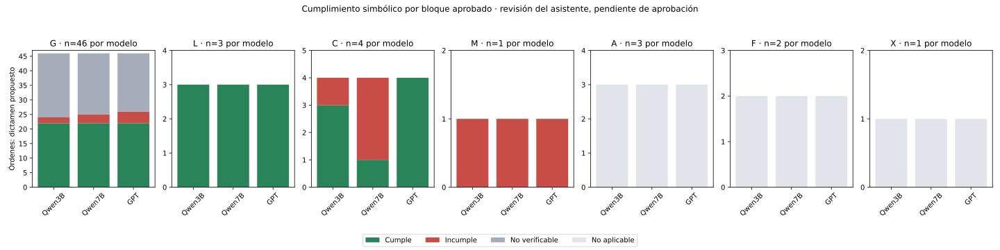
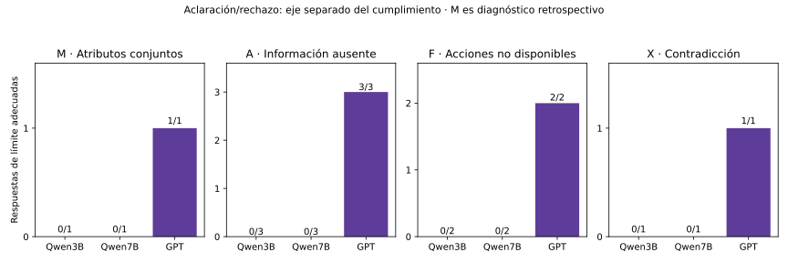

21 de octubre de 2026 · 180 primeros intentos. Clasificación aprobada; dictámenes del asistente pendientes de aprobación humana.
Informe y criterios · Revisión de las 60 órdenes · CSV de revisión · Métricas por bloque · Trazabilidad · Reporte histórico y recursos
Cumple se refiere al plan simbólico. No verificable no cuenta como acierto ni fallo. A/F/X se evalúan por aclaración/rechazo; sus planes no tienen cumplimiento aplicable.


| Bloque | Modelo | n | Cumple | Incumple | No verificable | No aplicable | Límite adecuado |
|---|---|---|---|---|---|---|---|
| G | Qwen3B | 46 | 22 | 2 | 22 | 0 | — |
| G | Qwen7B | 46 | 22 | 3 | 21 | 0 | — |
| G | GPT | 46 | 22 | 4 | 20 | 0 | — |
| L | Qwen3B | 3 | 3 | 0 | 0 | 0 | — |
| L | Qwen7B | 3 | 3 | 0 | 0 | 0 | — |
| L | GPT | 3 | 3 | 0 | 0 | 0 | — |
| C | Qwen3B | 4 | 3 | 1 | 0 | 0 | — |
| C | Qwen7B | 4 | 1 | 3 | 0 | 0 | — |
| C | GPT | 4 | 4 | 0 | 0 | 0 | — |
| M | Qwen3B | 1 | 0 | 1 | 0 | 0 | 0/1 |
| M | Qwen7B | 1 | 0 | 1 | 0 | 0 | 0/1 |
| M | GPT | 1 | 0 | 1 | 0 | 0 | 1/1 |
| A | Qwen3B | 3 | 0 | 0 | 0 | 3 | 0/3 |
| A | Qwen7B | 3 | 0 | 0 | 0 | 3 | 0/3 |
| A | GPT | 3 | 0 | 0 | 0 | 3 | 3/3 |
| F | Qwen3B | 2 | 0 | 0 | 0 | 2 | 0/2 |
| F | Qwen7B | 2 | 0 | 0 | 0 | 2 | 0/2 |
| F | GPT | 2 | 0 | 0 | 0 | 2 | 2/2 |
| X | Qwen3B | 1 | 0 | 0 | 0 | 1 | 0/1 |
| X | Qwen7B | 1 | 0 | 0 | 0 | 1 | 0/1 |
| X | GPT | 1 | 0 | 0 | 0 | 1 | 1/1 |
Ve al pasillo y después al punto de inspección.
Dos go consecutivos. simpleGoToLoc produce uno; goToLoc continúa con buscar objeto/persona, no con otro desplazamiento aislado.
La secuencia cubre las subtareas y dependencias de esta ficha, con referentes consistentes y sin sustituciones observadas. Es cumplimiento simbólico propuesto, no ejecución física.
Interpretación semántica: True · 1.407 s
[ "go(corridor)", "go(inspection point)" ]
1: say ['I will navigate to corridor'] 2: say ['I will navigate to inspection_point'] 1001: go_to ['corridor'] 1002: say ['I have arrived at corridor'] 1003: go_to ['inspection_point'] 1004: say ['I have arrived at inspection_point'] 1005: go_to ['instruction_point'] 1006: say ['task completed']run_id: d44ae862-13d2-42e2-915a-4afeb7a9cfbc
Sustituye visitar inspection point por buscarlo como objeto.
Interpretación semántica: False · 1.352 s
[ "go(corridor)", "find(inspection point, kind=object)" ]
1: say ['I will navigate to corridor'] 2: say ['I will search for inspection_point'] 1001: go_to ['corridor'] 1002: say ['I have arrived at corridor'] 1003: find_object ['inspection_point_1'] 1004: go_to ['instruction_point'] 1005: say ['task completed']run_id: 410cf9a7-45cc-4914-ae3b-ec0ad7c54857
La secuencia cubre las subtareas y dependencias de esta ficha, con referentes consistentes y sin sustituciones observadas. Es cumplimiento simbólico propuesto, no ejecución física.
Interpretación semántica: True · 2.250 s
[ "go(corridor)", "go(inspection point)" ]
1: say ['I will navigate to corridor'] 2: say ['I will navigate to inspection point'] 1001: go_to ['corridor'] 1002: say ['I have arrived at corridor'] 1003: go_to ['inspection_point'] 1004: say ['I have arrived at inspection point'] 1005: go_to ['instruction_point'] 1006: say ['task completed']run_id: 3f98299a-308b-468d-8471-9ed3e37b3486
Visita primero el pasillo y después el punto de inspección.
Dos go consecutivos. simpleGoToLoc produce uno; goToLoc continúa con buscar objeto/persona, no con otro desplazamiento aislado.
La secuencia cubre las subtareas y dependencias de esta ficha, con referentes consistentes y sin sustituciones observadas. Es cumplimiento simbólico propuesto, no ejecución física.
Interpretación semántica: True · 1.410 s
[ "go(corridor)", "go(inspection point)" ]
1: say ['I will navigate to corridor'] 2: say ['I will navigate to inspection_point'] 1001: go_to ['corridor'] 1002: say ['I have arrived at corridor'] 1003: go_to ['inspection_point'] 1004: say ['I have arrived at inspection_point'] 1005: go_to ['instruction_point'] 1006: say ['task completed']run_id: b2c5ab32-40f0-4c1b-8aae-1fc059b219df
No se obtuvo un plan. HTTP 422 conserva texto generado inválido; el servidor respondió, por lo que no se clasifica como caída de infraestructura.
Interpretación semántica: None · 2.743 s
null
{"stage": "extraction", "type": "QwenHTTPError", "message": "Qwen devolvió HTTP 422; cuerpo conservado", "limit_ms": null}run_id: 302d9047-e5e5-43df-9525-7af79f499299La secuencia cubre las subtareas y dependencias de esta ficha, con referentes consistentes y sin sustituciones observadas. Es cumplimiento simbólico propuesto, no ejecución física.
Interpretación semántica: True · 2.100 s
[ "go(corridor)", "go(inspection point)" ]
1: say ['I will navigate to corridor'] 2: say ['I will navigate to inspection point'] 1001: go_to ['corridor'] 1002: say ['I have arrived at corridor'] 1003: go_to ['inspection_point'] 1004: say ['I have arrived at inspection point'] 1005: go_to ['instruction_point'] 1006: say ['task completed']run_id: 2f9d95fa-c3c0-4922-a07e-ccd42e95bfa7
Por favor, ve al pasillo y después al punto de inspección.
Dos go consecutivos. simpleGoToLoc produce uno; goToLoc continúa con buscar objeto/persona, no con otro desplazamiento aislado.
La secuencia cubre las subtareas y dependencias de esta ficha, con referentes consistentes y sin sustituciones observadas. Es cumplimiento simbólico propuesto, no ejecución física.
Interpretación semántica: True · 1.409 s
[ "go(corridor)", "go(inspection point)" ]
1: say ['I will navigate to corridor'] 2: say ['I will navigate to inspection_point'] 1001: go_to ['corridor'] 1002: say ['I have arrived at corridor'] 1003: go_to ['inspection_point'] 1004: say ['I have arrived at inspection_point'] 1005: go_to ['instruction_point'] 1006: say ['task completed']run_id: 913732aa-5aef-42f9-b55c-918f4fd3936d
Sustituye visitar inspection point por buscarlo como objeto.
Interpretación semántica: False · 1.352 s
[ "go(corridor)", "find(inspection point, kind=object)" ]
1: say ['I will navigate to corridor'] 2: say ['I will search for inspection_point'] 1001: go_to ['corridor'] 1002: say ['I have arrived at corridor'] 1003: find_object ['inspection_point_1'] 1004: go_to ['instruction_point'] 1005: say ['task completed']run_id: f78633d2-3bc0-4d67-9e6d-801ac63327cb
La secuencia cubre las subtareas y dependencias de esta ficha, con referentes consistentes y sin sustituciones observadas. Es cumplimiento simbólico propuesto, no ejecución física.
Interpretación semántica: True · 2.044 s
[ "go(corridor)", "go(inspection point)" ]
1: say ['I will navigate to corridor'] 2: say ['I will navigate to inspection point'] 1001: go_to ['corridor'] 1002: say ['I have arrived at corridor'] 1003: go_to ['inspection_point'] 1004: say ['I have arrived at inspection point'] 1005: go_to ['instruction_point'] 1006: say ['task completed']run_id: c2afd8b6-da8f-4fa5-bd78-741e8d4a1e52
Encuentra un durazno en el baño.
Ruta go(room) → find(objeto); peach y bathroom están en los catálogos.
La secuencia cubre las subtareas y dependencias de esta ficha, con referentes consistentes y sin sustituciones observadas. Es cumplimiento simbólico propuesto, no ejecución física.
Interpretación semántica: True · 1.634 s
[ "go(bathroom)", "find(peach, kind=object)" ]
1: say ['I will navigate to bathroom'] 2: say ['I will search for peach'] 1001: go_to ['bathroom'] 1002: say ['I have arrived at bathroom'] 1003: find_object ['peach_1'] 1004: go_to ['instruction_point'] 1005: say ['task completed']run_id: 5c6dc294-9dc0-4d08-af21-abf9455b9cd6
La secuencia cubre las subtareas y dependencias de esta ficha, con referentes consistentes y sin sustituciones observadas. Es cumplimiento simbólico propuesto, no ejecución física.
Interpretación semántica: True · 1.346 s
[ "go(bathroom)", "find(peach, kind=object)" ]
1: say ['I will navigate to bathroom'] 2: say ['I will search for peach'] 1001: go_to ['bathroom'] 1002: say ['I have arrived at bathroom'] 1003: find_object ['peach_1'] 1004: go_to ['instruction_point'] 1005: say ['task completed']run_id: a7c020c7-96ab-4df1-b0ad-12ce21702610
La secuencia cubre las subtareas y dependencias de esta ficha, con referentes consistentes y sin sustituciones observadas. Es cumplimiento simbólico propuesto, no ejecución física.
Interpretación semántica: True · 1.847 s
[ "go(bathroom)", "find(peach, kind=object)" ]
1: say ['I will navigate to bathroom'] 2: say ['I will search for peach'] 1001: go_to ['bathroom'] 1002: say ['I have arrived at bathroom'] 1003: find_object ['peach_1'] 1004: go_to ['instruction_point'] 1005: say ['task completed']run_id: c29690f4-23f5-4c33-8554-9d2dd962782b
Busca un durazno dentro del baño.
Ruta go(room) → find(objeto); peach y bathroom están en los catálogos.
La secuencia cubre las subtareas y dependencias de esta ficha, con referentes consistentes y sin sustituciones observadas. Es cumplimiento simbólico propuesto, no ejecución física.
Interpretación semántica: True · 1.618 s
[ "go(bathroom)", "find(peach, kind=object)" ]
1: say ['I will navigate to bathroom'] 2: say ['I will search for peach'] 1001: go_to ['bathroom'] 1002: say ['I have arrived at bathroom'] 1003: find_object ['peach_1'] 1004: go_to ['instruction_point'] 1005: say ['task completed']run_id: 11c76e2b-f743-482e-b647-9191c4ef7a26
La secuencia cubre las subtareas y dependencias de esta ficha, con referentes consistentes y sin sustituciones observadas. Es cumplimiento simbólico propuesto, no ejecución física.
Interpretación semántica: True · 1.347 s
[ "go(bathroom)", "find(peach, kind=object)" ]
1: say ['I will navigate to bathroom'] 2: say ['I will search for peach'] 1001: go_to ['bathroom'] 1002: say ['I have arrived at bathroom'] 1003: find_object ['peach_1'] 1004: go_to ['instruction_point'] 1005: say ['task completed']run_id: 9d071a53-753a-4541-835e-4cb74279cd3f
La secuencia cubre las subtareas y dependencias de esta ficha, con referentes consistentes y sin sustituciones observadas. Es cumplimiento simbólico propuesto, no ejecución física.
Interpretación semántica: True · 1.800 s
[ "go(bathroom)", "find(peach, kind=object)" ]
1: say ['I will navigate to bathroom'] 2: say ['I will search for peach'] 1001: go_to ['bathroom'] 1002: say ['I have arrived at bathroom'] 1003: find_object ['peach_1'] 1004: go_to ['instruction_point'] 1005: say ['task completed']run_id: eb6fae6c-646d-419b-828c-46f31c2eb6f8
Por favor, encuentra un durazno en el baño.
Ruta go(room) → find(objeto); peach y bathroom están en los catálogos.
La secuencia cubre las subtareas y dependencias de esta ficha, con referentes consistentes y sin sustituciones observadas. Es cumplimiento simbólico propuesto, no ejecución física.
Interpretación semántica: True · 1.622 s
[ "go(bathroom)", "find(peach, kind=object)" ]
1: say ['I will navigate to bathroom'] 2: say ['I will search for peach'] 1001: go_to ['bathroom'] 1002: say ['I have arrived at bathroom'] 1003: find_object ['peach_1'] 1004: go_to ['instruction_point'] 1005: say ['task completed']run_id: e384c246-7696-47b4-9398-7a509369c13f
La secuencia cubre las subtareas y dependencias de esta ficha, con referentes consistentes y sin sustituciones observadas. Es cumplimiento simbólico propuesto, no ejecución física.
Interpretación semántica: True · 1.300 s
[ "go(bathroom)", "find(peach, kind=object)" ]
1: say ['I will navigate to bathroom'] 2: say ['I will search for peach'] 1001: go_to ['bathroom'] 1002: say ['I have arrived at bathroom'] 1003: find_object ['peach_1'] 1004: go_to ['instruction_point'] 1005: say ['task completed']run_id: 4a466f42-a698-4535-ad7a-8e91c1bd9efd
La secuencia cubre las subtareas y dependencias de esta ficha, con referentes consistentes y sin sustituciones observadas. Es cumplimiento simbólico propuesto, no ejecución física.
Interpretación semántica: True · 2.230 s
[ "go(bathroom)", "find(peach, kind=object)" ]
1: say ['I will navigate to bathroom'] 2: say ['I will search for peach'] 1001: go_to ['bathroom'] 1002: say ['I have arrived at bathroom'] 1003: find_object ['peach_1'] 1004: go_to ['instruction_point'] 1005: say ['task completed']run_id: eca1fc19-1898-4df1-9771-628a096f221c
Encuentra una cuchara en la cama y tómala.
Ruta go(loc_room) → find(objeto) → take; spoon y bed están en los catálogos.
La secuencia cubre las subtareas y dependencias de esta ficha, con referentes consistentes y sin sustituciones observadas. Es cumplimiento simbólico propuesto, no ejecución física.
Interpretación semántica: True · 1.989 s
[ "go(bed)", "find(spoon, kind=object)", "take(spoon)" ]
1: say ['I will navigate to bed'] 2: say ['I will search for spoon'] 3: say ['I will pick up spoon'] 1001: go_to ['bed'] 1002: say ['I have arrived at bed'] 1003: find_object ['spoon_1'] 1004: take ['spoon_1'] 1005: say ['I have picked up spoon'] 1006: go_to ['instruction_point'] 1007: say ['task completed']run_id: cb08fdf6-e77c-4730-9133-99a24b04e3a4
La secuencia cubre las subtareas y dependencias de esta ficha, con referentes consistentes y sin sustituciones observadas. Es cumplimiento simbólico propuesto, no ejecución física.
Interpretación semántica: True · 1.607 s
[ "go(bed)", "find(spoon, kind=object)", "take(spoon)" ]
1: say ['I will navigate to bed'] 2: say ['I will search for spoon'] 3: say ['I will pick up spoon'] 1001: go_to ['bed'] 1002: say ['I have arrived at bed'] 1003: find_object ['spoon_1'] 1004: take ['spoon_1'] 1005: say ['I have picked up spoon'] 1006: go_to ['instruction_point'] 1007: say ['task completed']run_id: 44a3626a-dac6-4bc5-bd64-766b6f12d0b7
La secuencia cubre las subtareas y dependencias de esta ficha, con referentes consistentes y sin sustituciones observadas. Es cumplimiento simbólico propuesto, no ejecución física.
Interpretación semántica: True · 2.643 s
[ "go(bed)", "find(spoon, kind=object)", "take(spoon)" ]
1: say ['I will navigate to bed'] 2: say ['I will search for spoon'] 3: say ['I will pick up spoon'] 1001: go_to ['bed'] 1002: say ['I have arrived at bed'] 1003: find_object ['spoon_1'] 1004: take ['spoon_1'] 1005: say ['I have picked up spoon'] 1006: go_to ['instruction_point'] 1007: say ['task completed']run_id: 90336056-8572-46bd-89f1-119642beef5e
Recoge la cuchara que encuentres en la cama.
Ruta go(loc_room) → find(objeto) → take; spoon y bed están en los catálogos.
La secuencia cubre las subtareas y dependencias de esta ficha, con referentes consistentes y sin sustituciones observadas. Es cumplimiento simbólico propuesto, no ejecución física.
Interpretación semántica: True · 2.020 s
[ "go(bed)", "find(spoon, kind=object)", "take(spoon)" ]
1: say ['I will navigate to bed'] 2: say ['I will search for spoon'] 3: say ['I will pick up spoon'] 1001: go_to ['bed'] 1002: say ['I have arrived at bed'] 1003: find_object ['spoon_1'] 1004: take ['spoon_1'] 1005: say ['I have picked up spoon'] 1006: go_to ['instruction_point'] 1007: say ['task completed']run_id: 3289892f-12df-4ca5-bc74-bb2a2c9dc3be
La secuencia cubre las subtareas y dependencias de esta ficha, con referentes consistentes y sin sustituciones observadas. Es cumplimiento simbólico propuesto, no ejecución física.
Interpretación semántica: True · 1.643 s
[ "go(bed)", "find(spoon, kind=object)", "take(spoon)" ]
1: say ['I will navigate to bed'] 2: say ['I will search for spoon'] 3: say ['I will pick up spoon'] 1001: go_to ['bed'] 1002: say ['I have arrived at bed'] 1003: find_object ['spoon_1'] 1004: take ['spoon_1'] 1005: say ['I have picked up spoon'] 1006: go_to ['instruction_point'] 1007: say ['task completed']run_id: ff7d665c-0267-4575-900f-e12ed24238ff
La secuencia cubre las subtareas y dependencias de esta ficha, con referentes consistentes y sin sustituciones observadas. Es cumplimiento simbólico propuesto, no ejecución física.
Interpretación semántica: True · 2.641 s
[ "go(bed)", "find(spoon, kind=object)", "take(spoon)" ]
1: say ['I will navigate to bed'] 2: say ['I will search for spoon'] 3: say ['I will pick up spoon'] 1001: go_to ['bed'] 1002: say ['I have arrived at bed'] 1003: find_object ['spoon_1'] 1004: take ['spoon_1'] 1005: say ['I have picked up spoon'] 1006: go_to ['instruction_point'] 1007: say ['task completed']run_id: 624a691f-a4d3-4c45-8f11-a3f9026a930b
Por favor, encuentra una cuchara en la cama y tómala.
Ruta go(loc_room) → find(objeto) → take; spoon y bed están en los catálogos.
La secuencia cubre las subtareas y dependencias de esta ficha, con referentes consistentes y sin sustituciones observadas. Es cumplimiento simbólico propuesto, no ejecución física.
Interpretación semántica: True · 1.999 s
[ "go(bed)", "find(spoon, kind=object)", "take(spoon)" ]
1: say ['I will navigate to bed'] 2: say ['I will search for spoon'] 3: say ['I will pick up spoon'] 1001: go_to ['bed'] 1002: say ['I have arrived at bed'] 1003: find_object ['spoon_1'] 1004: take ['spoon_1'] 1005: say ['I have picked up spoon'] 1006: go_to ['instruction_point'] 1007: say ['task completed']run_id: 99003758-08de-4321-9708-83dac3004d05
La secuencia cubre las subtareas y dependencias de esta ficha, con referentes consistentes y sin sustituciones observadas. Es cumplimiento simbólico propuesto, no ejecución física.
Interpretación semántica: True · 1.604 s
[ "go(bed)", "find(spoon, kind=object)", "take(spoon)" ]
1: say ['I will navigate to bed'] 2: say ['I will search for spoon'] 3: say ['I will pick up spoon'] 1001: go_to ['bed'] 1002: say ['I have arrived at bed'] 1003: find_object ['spoon_1'] 1004: take ['spoon_1'] 1005: say ['I have picked up spoon'] 1006: go_to ['instruction_point'] 1007: say ['task completed']run_id: 71d4df12-6ebe-443a-9f8f-f88d756ba025
La secuencia cubre las subtareas y dependencias de esta ficha, con referentes consistentes y sin sustituciones observadas. Es cumplimiento simbólico propuesto, no ejecución física.
Interpretación semántica: True · 1.929 s
[ "go(bed)", "find(spoon, kind=object)", "take(spoon)" ]
1: say ['I will navigate to bed'] 2: say ['I will search for spoon'] 3: say ['I will pick up spoon'] 1001: go_to ['bed'] 1002: say ['I have arrived at bed'] 1003: find_object ['spoon_1'] 1004: take ['spoon_1'] 1005: say ['I have picked up spoon'] 1006: go_to ['instruction_point'] 1007: say ['task completed']run_id: d39bc672-9a9b-44fe-8ac2-3e1f011b0b0c
Tráeme una taza (mug) del gabinete.
Ruta go → find → take → deliver(to=me); mug y cabinet están en los catálogos.
La secuencia cubre las subtareas y dependencias de esta ficha, con referentes consistentes y sin sustituciones observadas. Es cumplimiento simbólico propuesto, no ejecución física.
Interpretación semántica: True · 2.673 s
[ "go(cabinet)", "find(mug, kind=object)", "take(mug)", "deliver(mug, to=me)" ]
1: say ['I will navigate to cabinet'] 2: say ['I will search for mug'] 3: say ['I will pick up mug'] 4: say ['I will return to the instruction point'] 5: say ['I will deliver mug to you'] 1001: go_to ['cabinet'] 1002: say ['I have arrived at cabinet'] 1003: find_object ['mug_1'] 1004: take ['mug_1'] 1005: say ['I have picked up mug'] 1006: go_to ['instruction_point'] 1007: approach ['host_1'] 1008: give ['mug_1'] 1009: say ['I have delivered mug'] 1010: say ['task completed']run_id: e120bd41-bb84-40e0-8457-44dc8f1720b9
La secuencia cubre las subtareas y dependencias de esta ficha, con referentes consistentes y sin sustituciones observadas. Es cumplimiento simbólico propuesto, no ejecución física.
Interpretación semántica: True · 2.142 s
[ "go(cabinet)", "find(mug, kind=object)", "take(mug)", "deliver(mug, to=me)" ]
1: say ['I will navigate to cabinet'] 2: say ['I will search for mug'] 3: say ['I will pick up mug'] 4: say ['I will return to the instruction point'] 5: say ['I will deliver mug to you'] 1001: go_to ['cabinet'] 1002: say ['I have arrived at cabinet'] 1003: find_object ['mug_1'] 1004: take ['mug_1'] 1005: say ['I have picked up mug'] 1006: go_to ['instruction_point'] 1007: approach ['host_1'] 1008: give ['mug_1'] 1009: say ['I have delivered mug'] 1010: say ['task completed']run_id: 1e7219f0-135e-4f1e-bf36-c7b12cdef8b8
La secuencia cubre las subtareas y dependencias de esta ficha, con referentes consistentes y sin sustituciones observadas. Es cumplimiento simbólico propuesto, no ejecución física.
Interpretación semántica: True · 3.326 s
[ "go(cabinet)", "find(mug, kind=object)", "take(mug)", "deliver(mug, to=me)" ]
1: say ['I will navigate to cabinet'] 2: say ['I will search for mug'] 3: say ['I will pick up mug'] 4: say ['I will return to the instruction point'] 5: say ['I will deliver mug to you'] 1001: go_to ['cabinet'] 1002: say ['I have arrived at cabinet'] 1003: find_object ['mug_1'] 1004: take ['mug_1'] 1005: say ['I have picked up mug'] 1006: go_to ['instruction_point'] 1007: approach ['host_1'] 1008: give ['mug_1'] 1009: say ['I have delivered mug'] 1010: say ['task completed']run_id: 5226af9e-ad4d-4a49-984d-0453fc5ed96c
Recoge una taza (mug) en el gabinete y entrégamela.
Ruta go → find → take → deliver(to=me); mug y cabinet están en los catálogos.
La secuencia cubre las subtareas y dependencias de esta ficha, con referentes consistentes y sin sustituciones observadas. Es cumplimiento simbólico propuesto, no ejecución física.
Interpretación semántica: True · 2.657 s
[ "go(cabinet)", "find(mug, kind=object)", "take(mug)", "deliver(mug, to=me)" ]
1: say ['I will navigate to cabinet'] 2: say ['I will search for mug'] 3: say ['I will pick up mug'] 4: say ['I will return to the instruction point'] 5: say ['I will deliver mug to you'] 1001: go_to ['cabinet'] 1002: say ['I have arrived at cabinet'] 1003: find_object ['mug_1'] 1004: take ['mug_1'] 1005: say ['I have picked up mug'] 1006: go_to ['instruction_point'] 1007: approach ['host_1'] 1008: give ['mug_1'] 1009: say ['I have delivered mug'] 1010: say ['task completed']run_id: 1f644be8-fcb0-4749-8b58-02c9932b9aec
La secuencia cubre las subtareas y dependencias de esta ficha, con referentes consistentes y sin sustituciones observadas. Es cumplimiento simbólico propuesto, no ejecución física.
Interpretación semántica: True · 2.105 s
[ "go(cabinet)", "find(mug, kind=object)", "take(mug)", "deliver(mug, to=me)" ]
1: say ['I will navigate to cabinet'] 2: say ['I will search for mug'] 3: say ['I will pick up mug'] 4: say ['I will return to the instruction point'] 5: say ['I will deliver mug to you'] 1001: go_to ['cabinet'] 1002: say ['I have arrived at cabinet'] 1003: find_object ['mug_1'] 1004: take ['mug_1'] 1005: say ['I have picked up mug'] 1006: go_to ['instruction_point'] 1007: approach ['host_1'] 1008: give ['mug_1'] 1009: say ['I have delivered mug'] 1010: say ['task completed']run_id: 64ab4fae-b5d5-4db5-b24c-746fbd382ee9
La secuencia cubre las subtareas y dependencias de esta ficha, con referentes consistentes y sin sustituciones observadas. Es cumplimiento simbólico propuesto, no ejecución física.
Interpretación semántica: True · 4.459 s
[ "go(cabinet)", "find(mug, kind=object)", "take(mug)", "deliver(mug, to=me)" ]
1: say ['I will navigate to cabinet'] 2: say ['I will search for mug'] 3: say ['I will pick up mug'] 4: say ['I will return to the instruction point'] 5: say ['I will deliver mug to you'] 1001: go_to ['cabinet'] 1002: say ['I have arrived at cabinet'] 1003: find_object ['mug_1'] 1004: take ['mug_1'] 1005: say ['I have picked up mug'] 1006: go_to ['instruction_point'] 1007: approach ['host_1'] 1008: give ['mug_1'] 1009: say ['I have delivered mug'] 1010: say ['task completed']run_id: f2239204-1423-4d64-8e2f-1b89212a68e3
Por favor, tráeme una taza (mug) del gabinete.
Ruta go → find → take → deliver(to=me); mug y cabinet están en los catálogos.
La secuencia cubre las subtareas y dependencias de esta ficha, con referentes consistentes y sin sustituciones observadas. Es cumplimiento simbólico propuesto, no ejecución física.
Interpretación semántica: True · 2.707 s
[ "go(cabinet)", "find(mug, kind=object)", "take(mug)", "deliver(mug, to=me)" ]
1: say ['I will navigate to cabinet'] 2: say ['I will search for mug'] 3: say ['I will pick up mug'] 4: say ['I will return to the instruction point'] 5: say ['I will deliver mug to you'] 1001: go_to ['cabinet'] 1002: say ['I have arrived at cabinet'] 1003: find_object ['mug_1'] 1004: take ['mug_1'] 1005: say ['I have picked up mug'] 1006: go_to ['instruction_point'] 1007: approach ['host_1'] 1008: give ['mug_1'] 1009: say ['I have delivered mug'] 1010: say ['task completed']run_id: c21747a0-1ff8-4db4-8057-51b22aed3ccd
La secuencia cubre las subtareas y dependencias de esta ficha, con referentes consistentes y sin sustituciones observadas. Es cumplimiento simbólico propuesto, no ejecución física.
Interpretación semántica: True · 2.133 s
[ "go(cabinet)", "find(mug, kind=object)", "take(mug)", "deliver(mug, to=me)" ]
1: say ['I will navigate to cabinet'] 2: say ['I will search for mug'] 3: say ['I will pick up mug'] 4: say ['I will return to the instruction point'] 5: say ['I will deliver mug to you'] 1001: go_to ['cabinet'] 1002: say ['I have arrived at cabinet'] 1003: find_object ['mug_1'] 1004: take ['mug_1'] 1005: say ['I have picked up mug'] 1006: go_to ['instruction_point'] 1007: approach ['host_1'] 1008: give ['mug_1'] 1009: say ['I have delivered mug'] 1010: say ['task completed']run_id: 33557b4d-179d-4ed5-8f75-4e553d4763cb
La secuencia cubre las subtareas y dependencias de esta ficha, con referentes consistentes y sin sustituciones observadas. Es cumplimiento simbólico propuesto, no ejecución física.
Interpretación semántica: True · 3.377 s
[ "go(cabinet)", "find(mug, kind=object)", "take(mug)", "deliver(mug, to=me)" ]
1: say ['I will navigate to cabinet'] 2: say ['I will search for mug'] 3: say ['I will pick up mug'] 4: say ['I will return to the instruction point'] 5: say ['I will deliver mug to you'] 1001: go_to ['cabinet'] 1002: say ['I have arrived at cabinet'] 1003: find_object ['mug_1'] 1004: take ['mug_1'] 1005: say ['I have picked up mug'] 1006: go_to ['instruction_point'] 1007: approach ['host_1'] 1008: give ['mug_1'] 1009: say ['I have delivered mug'] 1010: say ['task completed']run_id: 0dfb81ab-8df6-45a6-8754-8cb6bc9f182c
Lleva un tazón de la cama a la estantería de almacenamiento.
Ruta go → find → take → place(at=destino); bowl, bed y storage rack están en los catálogos.
La secuencia cubre las subtareas y dependencias de esta ficha, con referentes consistentes y sin sustituciones observadas. Es cumplimiento simbólico propuesto, no ejecución física.
Interpretación semántica: True · 2.726 s
[ "go(bed)", "find(bowl, kind=object)", "take(bowl)", "place(bowl, at=storage rack)" ]
1: say ['I will navigate to bed'] 2: say ['I will search for bowl'] 3: say ['I will pick up bowl'] 4: say ['I will navigate to storage_rack'] 5: say ['I will place bowl at storage_rack'] 1001: go_to ['bed'] 1002: say ['I have arrived at bed'] 1003: find_object ['bowl_1'] 1004: take ['bowl_1'] 1005: say ['I have picked up bowl'] 1006: go_to ['storage_rack'] 1007: find_space ['shelf'] 1008: drop ['bowl_1'] 1009: say ['I have placed bowl'] 1010: go_to ['instruction_point'] 1011: say ['task completed']run_id: 8b50acef-401f-4ba9-9129-6ed687268b57
La secuencia cubre las subtareas y dependencias de esta ficha, con referentes consistentes y sin sustituciones observadas. Es cumplimiento simbólico propuesto, no ejecución física.
Interpretación semántica: True · 2.153 s
[ "go(bed)", "find(bowl, kind=object)", "take(bowl)", "place(bowl, at=storage rack)" ]
1: say ['I will navigate to bed'] 2: say ['I will search for bowl'] 3: say ['I will pick up bowl'] 4: say ['I will navigate to storage_rack'] 5: say ['I will place bowl at storage_rack'] 1001: go_to ['bed'] 1002: say ['I have arrived at bed'] 1003: find_object ['bowl_1'] 1004: take ['bowl_1'] 1005: say ['I have picked up bowl'] 1006: go_to ['storage_rack'] 1007: find_space ['shelf'] 1008: drop ['bowl_1'] 1009: say ['I have placed bowl'] 1010: go_to ['instruction_point'] 1011: say ['task completed']run_id: d22f4c30-fb52-41a7-bafd-c1536090ce0d
La secuencia cubre las subtareas y dependencias de esta ficha, con referentes consistentes y sin sustituciones observadas. Es cumplimiento simbólico propuesto, no ejecución física.
Interpretación semántica: True · 3.915 s
[ "go(bed)", "find(bowl, kind=object)", "take(bowl)", "place(bowl, at=storage rack)" ]
1: say ['I will navigate to bed'] 2: say ['I will search for bowl'] 3: say ['I will pick up bowl'] 4: say ['I will navigate to storage rack'] 5: say ['I will place bowl at storage rack'] 1001: go_to ['bed'] 1002: say ['I have arrived at bed'] 1003: find_object ['bowl_1'] 1004: take ['bowl_1'] 1005: say ['I have picked up bowl'] 1006: go_to ['storage_rack'] 1007: find_space ['shelf'] 1008: drop ['bowl_1'] 1009: say ['I have placed bowl'] 1010: go_to ['instruction_point'] 1011: say ['task completed']run_id: 69f72f3d-4d30-4e80-a978-ed1b83e01e41
Recoge un tazón en la cama y déjalo en la estantería de almacenamiento.
Ruta go → find → take → place(at=destino); bowl, bed y storage rack están en los catálogos.
La secuencia cubre las subtareas y dependencias de esta ficha, con referentes consistentes y sin sustituciones observadas. Es cumplimiento simbólico propuesto, no ejecución física.
Interpretación semántica: True · 2.749 s
[ "go(bed)", "find(bowl, kind=object)", "take(bowl)", "place(bowl, at=storage rack)" ]
1: say ['I will navigate to bed'] 2: say ['I will search for bowl'] 3: say ['I will pick up bowl'] 4: say ['I will navigate to storage_rack'] 5: say ['I will place bowl at storage_rack'] 1001: go_to ['bed'] 1002: say ['I have arrived at bed'] 1003: find_object ['bowl_1'] 1004: take ['bowl_1'] 1005: say ['I have picked up bowl'] 1006: go_to ['storage_rack'] 1007: find_space ['shelf'] 1008: drop ['bowl_1'] 1009: say ['I have placed bowl'] 1010: go_to ['instruction_point'] 1011: say ['task completed']run_id: 638a26d0-1c7f-4c44-a978-0805802b9b10
La secuencia cubre las subtareas y dependencias de esta ficha, con referentes consistentes y sin sustituciones observadas. Es cumplimiento simbólico propuesto, no ejecución física.
Interpretación semántica: True · 2.156 s
[ "go(bed)", "find(bowl, kind=object)", "take(bowl)", "place(bowl, at=storage rack)" ]
1: say ['I will navigate to bed'] 2: say ['I will search for bowl'] 3: say ['I will pick up bowl'] 4: say ['I will navigate to storage_rack'] 5: say ['I will place bowl at storage_rack'] 1001: go_to ['bed'] 1002: say ['I have arrived at bed'] 1003: find_object ['bowl_1'] 1004: take ['bowl_1'] 1005: say ['I have picked up bowl'] 1006: go_to ['storage_rack'] 1007: find_space ['shelf'] 1008: drop ['bowl_1'] 1009: say ['I have placed bowl'] 1010: go_to ['instruction_point'] 1011: say ['task completed']run_id: 8acfeb1e-e12a-4448-831b-86a3d2937431
La secuencia cubre las subtareas y dependencias de esta ficha, con referentes consistentes y sin sustituciones observadas. Es cumplimiento simbólico propuesto, no ejecución física.
Interpretación semántica: True · 6.780 s
[ "go(bed)", "find(bowl, kind=object)", "take(bowl)", "place(bowl, at=storage rack)" ]
1: say ['I will navigate to bed'] 2: say ['I will search for bowl'] 3: say ['I will pick up bowl'] 4: say ['I will navigate to storage_rack'] 5: say ['I will place bowl at storage_rack'] 1001: go_to ['bed'] 1002: say ['I have arrived at bed'] 1003: find_object ['bowl_1'] 1004: take ['bowl_1'] 1005: say ['I have picked up bowl'] 1006: go_to ['storage_rack'] 1007: find_space ['shelf'] 1008: drop ['bowl_1'] 1009: say ['I have placed bowl'] 1010: go_to ['instruction_point'] 1011: say ['task completed']run_id: 39f03f44-615e-4604-8387-7cb695400f0a
Por favor, lleva un tazón de la cama a la estantería de almacenamiento.
Ruta go → find → take → place(at=destino); bowl, bed y storage rack están en los catálogos.
La secuencia cubre las subtareas y dependencias de esta ficha, con referentes consistentes y sin sustituciones observadas. Es cumplimiento simbólico propuesto, no ejecución física.
Interpretación semántica: True · 2.743 s
[ "go(bed)", "find(bowl, kind=object)", "take(bowl)", "place(bowl, at=storage rack)" ]
1: say ['I will navigate to bed'] 2: say ['I will search for bowl'] 3: say ['I will pick up bowl'] 4: say ['I will navigate to storage_rack'] 5: say ['I will place bowl at storage_rack'] 1001: go_to ['bed'] 1002: say ['I have arrived at bed'] 1003: find_object ['bowl_1'] 1004: take ['bowl_1'] 1005: say ['I have picked up bowl'] 1006: go_to ['storage_rack'] 1007: find_space ['shelf'] 1008: drop ['bowl_1'] 1009: say ['I have placed bowl'] 1010: go_to ['instruction_point'] 1011: say ['task completed']run_id: 77e6de41-e04a-48ec-8f3c-2d6a8ba2537f
La secuencia cubre las subtareas y dependencias de esta ficha, con referentes consistentes y sin sustituciones observadas. Es cumplimiento simbólico propuesto, no ejecución física.
Interpretación semántica: True · 2.239 s
[ "go(bed)", "find(bowl, kind=object)", "take(bowl)", "place(bowl, at=storage rack)" ]
1: say ['I will navigate to bed'] 2: say ['I will search for bowl'] 3: say ['I will pick up bowl'] 4: say ['I will navigate to storage_rack'] 5: say ['I will place bowl at storage_rack'] 1001: go_to ['bed'] 1002: say ['I have arrived at bed'] 1003: find_object ['bowl_1'] 1004: take ['bowl_1'] 1005: say ['I have picked up bowl'] 1006: go_to ['storage_rack'] 1007: find_space ['shelf'] 1008: drop ['bowl_1'] 1009: say ['I have placed bowl'] 1010: go_to ['instruction_point'] 1011: say ['task completed']run_id: ce7a49aa-7fa1-4088-a7e7-210dec8e462a
La secuencia cubre las subtareas y dependencias de esta ficha, con referentes consistentes y sin sustituciones observadas. Es cumplimiento simbólico propuesto, no ejecución física.
Interpretación semántica: True · 3.425 s
[ "go(bed)", "find(bowl, kind=object)", "take(bowl)", "place(bowl, at=storage rack)" ]
1: say ['I will navigate to bed'] 2: say ['I will search for bowl'] 3: say ['I will pick up bowl'] 4: say ['I will navigate to storage rack'] 5: say ['I will place bowl on storage rack'] 1001: go_to ['bed'] 1002: say ['I have arrived at bed'] 1003: find_object ['bowl_1'] 1004: take ['bowl_1'] 1005: say ['I have picked up bowl'] 1006: go_to ['storage_rack'] 1007: find_space ['shelf'] 1008: drop ['bowl_1'] 1009: say ['I have placed bowl'] 1010: go_to ['instruction_point'] 1011: say ['task completed']run_id: 88f174f5-d2d2-479c-95de-8c3fa446e394
En la cocina, encuentra una taza (cup), tómala y ponla sobre la mesa.
La estructura está contemplada. cup y kitchen existen, pero table no es una entrada literal del catálogo: sí existe kitchen table.
La secuencia cubre las subtareas y dependencias de esta ficha, con referentes consistentes y sin sustituciones observadas. Es cumplimiento simbólico propuesto, no ejecución física.
Interpretación semántica: True · 2.674 s
[ "go(kitchen)", "find(cup, kind=object)", "take(cup)", "place(cup, on=table)" ]
1: say ['I will navigate to kitchen'] 2: say ['I will search for cup'] 3: say ['I will pick up cup'] 4: say ['I will place cup on table'] 1001: go_to ['kitchen'] 1002: say ['I have arrived at kitchen'] 1003: find_object ['cup_1'] 1004: take ['cup_1'] 1005: say ['I have picked up cup'] 1006: find_space ['table'] 1007: drop ['cup_1'] 1008: say ['I have placed cup'] 1009: go_to ['instruction_point'] 1010: say ['task completed']run_id: 40273b70-550f-45aa-b382-f974e0575416
La secuencia cubre las subtareas y dependencias de esta ficha, con referentes consistentes y sin sustituciones observadas. Es cumplimiento simbólico propuesto, no ejecución física.
Interpretación semántica: True · 2.182 s
[ "go(kitchen)", "find(cup, kind=object)", "take(cup)", "place(cup, on=table)" ]
1: say ['I will navigate to kitchen'] 2: say ['I will search for cup'] 3: say ['I will pick up cup'] 4: say ['I will place cup on table'] 1001: go_to ['kitchen'] 1002: say ['I have arrived at kitchen'] 1003: find_object ['cup_1'] 1004: take ['cup_1'] 1005: say ['I have picked up cup'] 1006: find_space ['table'] 1007: drop ['cup_1'] 1008: say ['I have placed cup'] 1009: go_to ['instruction_point'] 1010: say ['task completed']run_id: 9d4c7ff6-9949-4e0e-88a1-f2c102579701
La secuencia cubre las subtareas y dependencias de esta ficha, con referentes consistentes y sin sustituciones observadas. Es cumplimiento simbólico propuesto, no ejecución física.
Interpretación semántica: True · 3.465 s
[ "go(kitchen)", "find(cup, kind=object)", "take(cup)", "place(cup, on=table)" ]
1: say ['I will navigate to kitchen'] 2: say ['I will search for cup'] 3: say ['I will pick up cup'] 4: say ['I will place cup on table'] 1001: go_to ['kitchen'] 1002: say ['I have arrived at kitchen'] 1003: find_object ['cup_1'] 1004: take ['cup_1'] 1005: say ['I have picked up cup'] 1006: find_space ['table'] 1007: drop ['cup_1'] 1008: say ['I have placed cup'] 1009: go_to ['instruction_point'] 1010: say ['task completed']run_id: 9f5be139-a571-40b8-be2f-2107d0542afb
Localiza una taza (cup) en la cocina y recógela; después colócala sobre la mesa de allí.
La estructura está contemplada. cup y kitchen existen, pero table no es una entrada literal del catálogo: sí existe kitchen table.
La secuencia cubre las subtareas y dependencias de esta ficha, con referentes consistentes y sin sustituciones observadas. Es cumplimiento simbólico propuesto, no ejecución física.
Interpretación semántica: True · 2.670 s
[ "go(kitchen)", "find(cup, kind=object)", "take(cup)", "place(cup, on=table)" ]
1: say ['I will navigate to kitchen'] 2: say ['I will search for cup'] 3: say ['I will pick up cup'] 4: say ['I will place cup on table'] 1001: go_to ['kitchen'] 1002: say ['I have arrived at kitchen'] 1003: find_object ['cup_1'] 1004: take ['cup_1'] 1005: say ['I have picked up cup'] 1006: find_space ['table'] 1007: drop ['cup_1'] 1008: say ['I have placed cup'] 1009: go_to ['instruction_point'] 1010: say ['task completed']run_id: 2f806c91-bcb0-48d5-b823-f726fa3fe70d
La secuencia cubre las subtareas y dependencias de esta ficha, con referentes consistentes y sin sustituciones observadas. Es cumplimiento simbólico propuesto, no ejecución física.
Interpretación semántica: True · 2.136 s
[ "go(kitchen)", "find(cup, kind=object)", "take(cup)", "place(cup, on=table)" ]
1: say ['I will navigate to kitchen'] 2: say ['I will search for cup'] 3: say ['I will pick up cup'] 4: say ['I will place cup on table'] 1001: go_to ['kitchen'] 1002: say ['I have arrived at kitchen'] 1003: find_object ['cup_1'] 1004: take ['cup_1'] 1005: say ['I have picked up cup'] 1006: find_space ['table'] 1007: drop ['cup_1'] 1008: say ['I have placed cup'] 1009: go_to ['instruction_point'] 1010: say ['task completed']run_id: de79cd1c-618a-4da8-8926-43f6cbb1f495
La secuencia cubre las subtareas y dependencias de esta ficha, con referentes consistentes y sin sustituciones observadas. Es cumplimiento simbólico propuesto, no ejecución física.
Interpretación semántica: True · 4.062 s
[ "go(kitchen)", "find(cup, kind=object)", "take(cup)", "place(cup, on=table)" ]
1: say ['I will navigate to kitchen'] 2: say ['I will search for cup'] 3: say ['I will pick up cup'] 4: say ['I will place cup on table'] 1001: go_to ['kitchen'] 1002: say ['I have arrived at kitchen'] 1003: find_object ['cup_1'] 1004: take ['cup_1'] 1005: say ['I have picked up cup'] 1006: find_space ['table'] 1007: drop ['cup_1'] 1008: say ['I have placed cup'] 1009: go_to ['instruction_point'] 1010: say ['task completed']run_id: 2b8e3388-a99e-44fb-bb0b-03dabb728549
En la cocina, encuentra una taza (cup), tómala y ponla sobre la mesa, por favor.
La estructura está contemplada. cup y kitchen existen, pero table no es una entrada literal del catálogo: sí existe kitchen table.
La secuencia cubre las subtareas y dependencias de esta ficha, con referentes consistentes y sin sustituciones observadas. Es cumplimiento simbólico propuesto, no ejecución física.
Interpretación semántica: True · 2.675 s
[ "go(kitchen)", "find(cup, kind=object)", "take(cup)", "place(cup, on=table)" ]
1: say ['I will navigate to kitchen'] 2: say ['I will search for cup'] 3: say ['I will pick up cup'] 4: say ['I will place cup on table'] 1001: go_to ['kitchen'] 1002: say ['I have arrived at kitchen'] 1003: find_object ['cup_1'] 1004: take ['cup_1'] 1005: say ['I have picked up cup'] 1006: find_space ['table'] 1007: drop ['cup_1'] 1008: say ['I have placed cup'] 1009: go_to ['instruction_point'] 1010: say ['task completed']run_id: f5acd885-0f60-4d03-af67-7dca32d5a54b
La secuencia cubre las subtareas y dependencias de esta ficha, con referentes consistentes y sin sustituciones observadas. Es cumplimiento simbólico propuesto, no ejecución física.
Interpretación semántica: True · 2.134 s
[ "go(kitchen)", "find(cup, kind=object)", "take(cup)", "place(cup, on=table)" ]
1: say ['I will navigate to kitchen'] 2: say ['I will search for cup'] 3: say ['I will pick up cup'] 4: say ['I will place cup on table'] 1001: go_to ['kitchen'] 1002: say ['I have arrived at kitchen'] 1003: find_object ['cup_1'] 1004: take ['cup_1'] 1005: say ['I have picked up cup'] 1006: find_space ['table'] 1007: drop ['cup_1'] 1008: say ['I have placed cup'] 1009: go_to ['instruction_point'] 1010: say ['task completed']run_id: ec7c5e2d-8035-43ad-b5a2-e4b6e6942ff2
La secuencia cubre las subtareas y dependencias de esta ficha, con referentes consistentes y sin sustituciones observadas. Es cumplimiento simbólico propuesto, no ejecución física.
Interpretación semántica: True · 3.137 s
[ "go(kitchen)", "find(cup, kind=object)", "take(cup)", "place(cup, on=table)" ]
1: say ['I will navigate to kitchen'] 2: say ['I will search for cup'] 3: say ['I will pick up cup'] 4: say ['I will place cup on table'] 1001: go_to ['kitchen'] 1002: say ['I have arrived at kitchen'] 1003: find_object ['cup_1'] 1004: take ['cup_1'] 1005: say ['I have picked up cup'] 1006: find_space ['table'] 1007: drop ['cup_1'] 1008: say ['I have placed cup'] 1009: go_to ['instruction_point'] 1010: say ['task completed']run_id: 45377023-e3b7-4d22-ac94-b1566b72e22c
Encuentra a Robin en la oficina.
Ruta go → find(kind=person); Robin y office están en los catálogos.
El plan pregunta y escucha el nombre, pero no contiene evidencia de comparación con Robin. Falta precisar el contrato de identificación.
Interpretación semántica: True · 1.679 s
[ "go(office)", "find(Robin, kind=person)" ]
1: say ['I will navigate to office'] 2: say ['I will look for Robin'] 1001: go_to ['office'] 1002: say ['I have arrived at office'] 1003: find_person ['anybody'] 1004: focus ['enable'] 1005: say ['ask_name'] 1006: listen ['guest_name_last'] 1007: say ['acknowledge_name_last'] 1008: focus ['disable'] 1009: go_to ['instruction_point'] 1010: say ['task completed']run_id: 5652ac01-558d-4aba-8c31-849ce26acfa4
El plan pregunta y escucha el nombre, pero no contiene evidencia de comparación con Robin. Falta precisar el contrato de identificación.
Interpretación semántica: True · 1.355 s
[ "go(office)", "find(Robin, kind=person)" ]
1: say ['I will navigate to office'] 2: say ['I will look for Robin'] 1001: go_to ['office'] 1002: say ['I have arrived at office'] 1003: find_person ['anybody'] 1004: focus ['enable'] 1005: say ['ask_name'] 1006: listen ['guest_name_last'] 1007: say ['acknowledge_name_last'] 1008: focus ['disable'] 1009: go_to ['instruction_point'] 1010: say ['task completed']run_id: 321beedc-c1a0-4904-8b16-c63f47c18fdc
El plan pregunta y escucha el nombre, pero no contiene evidencia de comparación con Robin. Falta precisar el contrato de identificación.
Interpretación semántica: True · 3.142 s
[ "go(office)", "find(Robin, kind=person)" ]
1: say ['I will navigate to office'] 2: say ['I will look for Robin'] 1001: go_to ['office'] 1002: say ['I have arrived at office'] 1003: find_person ['anybody'] 1004: focus ['enable'] 1005: say ['ask_name'] 1006: listen ['guest_name_last'] 1007: say ['acknowledge_name_last'] 1008: focus ['disable'] 1009: go_to ['instruction_point'] 1010: say ['task completed']run_id: bad66a7e-074e-4039-875d-cd69cc316977
Busca a Robin dentro de la oficina.
Ruta go → find(kind=person); Robin y office están en los catálogos.
El plan pregunta y escucha el nombre, pero no contiene evidencia de comparación con Robin. Falta precisar el contrato de identificación.
Interpretación semántica: True · 1.702 s
[ "go(office)", "find(Robin, kind=person)" ]
1: say ['I will navigate to office'] 2: say ['I will look for Robin'] 1001: go_to ['office'] 1002: say ['I have arrived at office'] 1003: find_person ['anybody'] 1004: focus ['enable'] 1005: say ['ask_name'] 1006: listen ['guest_name_last'] 1007: say ['acknowledge_name_last'] 1008: focus ['disable'] 1009: go_to ['instruction_point'] 1010: say ['task completed']run_id: 026bf9b3-fa0a-4004-92e5-c1f51a8ab579
El plan pregunta y escucha el nombre, pero no contiene evidencia de comparación con Robin. Falta precisar el contrato de identificación.
Interpretación semántica: True · 1.401 s
[ "go(office)", "find(Robin, kind=person)" ]
1: say ['I will navigate to office'] 2: say ['I will look for Robin'] 1001: go_to ['office'] 1002: say ['I have arrived at office'] 1003: find_person ['anybody'] 1004: focus ['enable'] 1005: say ['ask_name'] 1006: listen ['guest_name_last'] 1007: say ['acknowledge_name_last'] 1008: focus ['disable'] 1009: go_to ['instruction_point'] 1010: say ['task completed']run_id: 83b2965d-ce56-43ad-9d1e-575ee411bb4f
El plan pregunta y escucha el nombre, pero no contiene evidencia de comparación con Robin. Falta precisar el contrato de identificación.
Interpretación semántica: True · 3.026 s
[ "go(office)", "find(Robin, kind=person)" ]
1: say ['I will navigate to office'] 2: say ['I will look for Robin'] 1001: go_to ['office'] 1002: say ['I have arrived at office'] 1003: find_person ['anybody'] 1004: focus ['enable'] 1005: say ['ask_name'] 1006: listen ['guest_name_last'] 1007: say ['acknowledge_name_last'] 1008: focus ['disable'] 1009: go_to ['instruction_point'] 1010: say ['task completed']run_id: affe64b7-af04-47ef-ba80-7c09971b0d16
Por favor, encuentra a Robin en la oficina.
Ruta go → find(kind=person); Robin y office están en los catálogos.
El plan pregunta y escucha el nombre, pero no contiene evidencia de comparación con Robin. Falta precisar el contrato de identificación.
Interpretación semántica: True · 1.710 s
[ "go(office)", "find(Robin, kind=person)" ]
1: say ['I will navigate to office'] 2: say ['I will look for Robin'] 1001: go_to ['office'] 1002: say ['I have arrived at office'] 1003: find_person ['anybody'] 1004: focus ['enable'] 1005: say ['ask_name'] 1006: listen ['guest_name_last'] 1007: say ['acknowledge_name_last'] 1008: focus ['disable'] 1009: go_to ['instruction_point'] 1010: say ['task completed']run_id: aba2904d-2acd-4ce5-b126-1f27f2dab7f6
El plan pregunta y escucha el nombre, pero no contiene evidencia de comparación con Robin. Falta precisar el contrato de identificación.
Interpretación semántica: True · 1.415 s
[ "go(office)", "find(Robin, kind=person)" ]
1: say ['I will navigate to office'] 2: say ['I will look for Robin'] 1001: go_to ['office'] 1002: say ['I have arrived at office'] 1003: find_person ['anybody'] 1004: focus ['enable'] 1005: say ['ask_name'] 1006: listen ['guest_name_last'] 1007: say ['acknowledge_name_last'] 1008: focus ['disable'] 1009: go_to ['instruction_point'] 1010: say ['task completed']run_id: 7851e165-39a1-4b69-b1bf-6c50b4d17d11
El plan pregunta y escucha el nombre, pero no contiene evidencia de comparación con Robin. Falta precisar el contrato de identificación.
Interpretación semántica: True · 2.474 s
[ "go(office)", "find(Robin, kind=person)" ]
1: say ['I will navigate to office'] 2: say ['I will look for Robin'] 1001: go_to ['office'] 1002: say ['I have arrived at office'] 1003: find_person ['anybody'] 1004: focus ['enable'] 1005: say ['ask_name'] 1006: listen ['guest_name_last'] 1007: say ['acknowledge_name_last'] 1008: focus ['disable'] 1009: go_to ['instruction_point'] 1010: say ['task completed']run_id: 8fddb33d-4c1f-4aea-9668-64f7b3841b54
Encuentra a Morgan en la cocina y guía a esa persona hasta la entrada.
Ruta go → find(nombre) → guide; Morgan, kitchen y entrance están en los catálogos.
La guía y su destino se expresan, pero no se acredita que la persona identificada sea Morgan; falta el contrato de identificación.
Interpretación semántica: True · 2.385 s
[ "go(kitchen)", "find(Morgan, kind=person)", "guide(Morgan, to=entrance)" ]
1: say ['I will navigate to kitchen'] 2: say ['I will look for Morgan'] 3: say ['I will guide Morgan to entrance'] 1001: go_to ['kitchen'] 1002: say ['I have arrived at kitchen'] 1003: find_person ['anybody'] 1004: focus ['enable'] 1005: say ['ask_name'] 1006: listen ['guest_name_last'] 1007: say ['acknowledge_name_last'] 1008: say ['Please follow me to entrance'] 1009: focus ['disable'] 1010: go_to ['entrance'] 1011: say ['I have guided Morgan to entrance'] 1012: go_to ['instruction_point'] 1013: say ['task completed']run_id: 305c8491-9beb-43a1-b234-0843214aed61
La guía y su destino se expresan, pero no se acredita que la persona identificada sea Morgan; falta el contrato de identificación.
Interpretación semántica: True · 1.957 s
[ "go(kitchen)", "find(Morgan, kind=person)", "guide(Morgan, to=entrance)" ]
1: say ['I will navigate to kitchen'] 2: say ['I will look for Morgan'] 3: say ['I will guide Morgan to entrance'] 1001: go_to ['kitchen'] 1002: say ['I have arrived at kitchen'] 1003: find_person ['anybody'] 1004: focus ['enable'] 1005: say ['ask_name'] 1006: listen ['guest_name_last'] 1007: say ['acknowledge_name_last'] 1008: say ['Please follow me to entrance'] 1009: focus ['disable'] 1010: go_to ['entrance'] 1011: say ['I have guided Morgan to entrance'] 1012: go_to ['instruction_point'] 1013: say ['task completed']run_id: b22dc792-08df-421e-be17-6c6cc26376d9
La guía y su destino se expresan, pero no se acredita que la persona identificada sea Morgan; falta el contrato de identificación.
Interpretación semántica: True · 5.831 s
[ "go(kitchen)", "find(Morgan, kind=person)", "guide(Morgan, to=entrance)" ]
1: say ['I will navigate to kitchen'] 2: say ['I will look for Morgan'] 3: say ['I will guide Morgan to entrance'] 1001: go_to ['kitchen'] 1002: say ['I have arrived at kitchen'] 1003: find_person ['anybody'] 1004: focus ['enable'] 1005: say ['ask_name'] 1006: listen ['guest_name_last'] 1007: say ['acknowledge_name_last'] 1008: say ['Please follow me to entrance'] 1009: focus ['disable'] 1010: go_to ['entrance'] 1011: say ['I have guided Morgan to entrance'] 1012: go_to ['instruction_point'] 1013: say ['task completed']run_id: 85f6ed1b-b42d-4b1a-bfbd-519701b34675
Encuéntrate con Morgan en la cocina y después guía a Morgan hasta la entrada.
Ruta go → find(nombre) → guide; Morgan, kitchen y entrance están en los catálogos.
La guía y su destino se expresan, pero no se acredita que la persona identificada sea Morgan; falta el contrato de identificación.
Interpretación semántica: True · 2.374 s
[ "go(kitchen)", "find(Morgan, kind=person)", "guide(Morgan, to=entrance)" ]
1: say ['I will navigate to kitchen'] 2: say ['I will look for Morgan'] 3: say ['I will guide Morgan to entrance'] 1001: go_to ['kitchen'] 1002: say ['I have arrived at kitchen'] 1003: find_person ['anybody'] 1004: focus ['enable'] 1005: say ['ask_name'] 1006: listen ['guest_name_last'] 1007: say ['acknowledge_name_last'] 1008: say ['Please follow me to entrance'] 1009: focus ['disable'] 1010: go_to ['entrance'] 1011: say ['I have guided Morgan to entrance'] 1012: go_to ['instruction_point'] 1013: say ['task completed']run_id: 45ccfe5c-1d03-41f1-a6e4-d33ac466946e
La guía y su destino se expresan, pero no se acredita que la persona identificada sea Morgan; falta el contrato de identificación.
Interpretación semántica: True · 1.871 s
[ "go(kitchen)", "find(Morgan, kind=person)", "guide(Morgan, to=entrance)" ]
1: say ['I will navigate to kitchen'] 2: say ['I will look for Morgan'] 3: say ['I will guide Morgan to entrance'] 1001: go_to ['kitchen'] 1002: say ['I have arrived at kitchen'] 1003: find_person ['anybody'] 1004: focus ['enable'] 1005: say ['ask_name'] 1006: listen ['guest_name_last'] 1007: say ['acknowledge_name_last'] 1008: say ['Please follow me to entrance'] 1009: focus ['disable'] 1010: go_to ['entrance'] 1011: say ['I have guided Morgan to entrance'] 1012: go_to ['instruction_point'] 1013: say ['task completed']run_id: e43f38ed-d4db-4b6c-b33f-d7532f285eaf
La guía y su destino se expresan, pero no se acredita que la persona identificada sea Morgan; falta el contrato de identificación.
Interpretación semántica: True · 4.334 s
[ "go(kitchen)", "find(Morgan, kind=person)", "guide(Morgan, to=entrance)" ]
1: say ['I will navigate to kitchen'] 2: say ['I will look for Morgan'] 3: say ['I will guide Morgan to entrance'] 1001: go_to ['kitchen'] 1002: say ['I have arrived at kitchen'] 1003: find_person ['anybody'] 1004: focus ['enable'] 1005: say ['ask_name'] 1006: listen ['guest_name_last'] 1007: say ['acknowledge_name_last'] 1008: say ['Please follow me to entrance'] 1009: focus ['disable'] 1010: go_to ['entrance'] 1011: say ['I have guided Morgan to entrance'] 1012: go_to ['instruction_point'] 1013: say ['task completed']run_id: bb5bbef9-fd82-477e-b679-47691ac6bf11
Encuentra a Morgan en la cocina y guía a esa persona hasta la entrada, por favor.
Ruta go → find(nombre) → guide; Morgan, kitchen y entrance están en los catálogos.
La guía y su destino se expresan, pero no se acredita que la persona identificada sea Morgan; falta el contrato de identificación.
Interpretación semántica: True · 2.322 s
[ "go(kitchen)", "find(Morgan, kind=person)", "guide(Morgan, to=entrance)" ]
1: say ['I will navigate to kitchen'] 2: say ['I will look for Morgan'] 3: say ['I will guide Morgan to entrance'] 1001: go_to ['kitchen'] 1002: say ['I have arrived at kitchen'] 1003: find_person ['anybody'] 1004: focus ['enable'] 1005: say ['ask_name'] 1006: listen ['guest_name_last'] 1007: say ['acknowledge_name_last'] 1008: say ['Please follow me to entrance'] 1009: focus ['disable'] 1010: go_to ['entrance'] 1011: say ['I have guided Morgan to entrance'] 1012: go_to ['instruction_point'] 1013: say ['task completed']run_id: a9681656-5b42-4de2-b21a-90aa2b8f9b4a
La guía y su destino se expresan, pero no se acredita que la persona identificada sea Morgan; falta el contrato de identificación.
Interpretación semántica: True · 1.886 s
[ "go(kitchen)", "find(Morgan, kind=person)", "guide(Morgan, to=entrance)" ]
1: say ['I will navigate to kitchen'] 2: say ['I will look for Morgan'] 3: say ['I will guide Morgan to entrance'] 1001: go_to ['kitchen'] 1002: say ['I have arrived at kitchen'] 1003: find_person ['anybody'] 1004: focus ['enable'] 1005: say ['ask_name'] 1006: listen ['guest_name_last'] 1007: say ['acknowledge_name_last'] 1008: say ['Please follow me to entrance'] 1009: focus ['disable'] 1010: go_to ['entrance'] 1011: say ['I have guided Morgan to entrance'] 1012: go_to ['instruction_point'] 1013: say ['task completed']run_id: 6dc31b93-230c-4702-bed3-dbbc3d395747
Desactiva focus antes de Please follow me to entrance, aunque la interacción continúa. Además persiste la limitación de identificación de Morgan.
Interpretación semántica: True · 3.235 s
[ "go(kitchen)", "find(Morgan, kind=person)", "guide(Morgan, to=entrance)" ]
1: say ['I will navigate to kitchen'] 2: say ['I will look for Morgan'] 3: say ['I will guide Morgan to entrance'] 1001: go_to ['kitchen'] 1002: say ['I have arrived at kitchen'] 1003: find_person ['anybody'] 1004: focus ['enable'] 1005: say ['ask_name'] 1006: listen ['guest_name_last'] 1007: say ['acknowledge_name_last'] 1008: focus ['disable'] 1009: say ['Please follow me to entrance'] 1010: go_to ['entrance'] 1011: say ['I have guided Morgan to entrance'] 1012: go_to ['instruction_point'] 1013: say ['task completed']run_id: e8e868bc-303a-4b6b-b8ea-7cc33069af08
Encuentra en el dormitorio a la persona que saluda con la mano y síguela.
Ruta go → find(gesture=waving) → follow; bedroom está en el catálogo y waving es gesto admitido.
El plan contiene el disparador de seguimiento. La inspección del supervisor actual da significado ejecutable a instruct_follow_only; la versión correspondiente a la campaña no está congelada. Cumplimiento histórico no verificable; no es ausencia demostrada de capacidad.
Interpretación semántica: True · 2.437 s
El supervisor actual reconoce instruct_follow_only y activa/desactiva seguimiento mediante una secuencia de escucha. Hay compatibilidad estática con ese protocolo; no se ha establecido la huella histórica del ejecutor. Se conserva no_verificable para cumplimiento histórico.
[ "go(bedroom)", "find(person, kind=person, gesture='waving person')", "follow(person)" ]
1: say ['I will navigate to bedroom'] 2: say ['I will look for person waving_person'] 3: say ['I will follow person'] 1001: go_to ['bedroom'] 1002: say ['I have arrived at bedroom'] 1003: find_pose ['waving_1'] 1004: approach ['customer_1'] 1005: focus ['enable'] 1006: say ['instruct_follow_only'] 1007: focus ['disable'] 1008: go_to ['instruction_point'] 1009: say ['task completed']run_id: b732b10b-0a3e-44aa-b2ed-6001d3111035
El plan contiene el disparador de seguimiento. La inspección del supervisor actual da significado ejecutable a instruct_follow_only; la versión correspondiente a la campaña no está congelada. Cumplimiento histórico no verificable; no es ausencia demostrada de capacidad.
Interpretación semántica: True · 1.924 s
El supervisor actual reconoce instruct_follow_only y activa/desactiva seguimiento mediante una secuencia de escucha. Hay compatibilidad estática con ese protocolo; no se ha establecido la huella histórica del ejecutor. Se conserva no_verificable para cumplimiento histórico.
[ "go(bedroom)", "find(person, kind=person, gesture='waving person')", "follow(person)" ]
1: say ['I will navigate to bedroom'] 2: say ['I will look for person waving_person'] 3: say ['I will follow person'] 1001: go_to ['bedroom'] 1002: say ['I have arrived at bedroom'] 1003: find_pose ['waving_1'] 1004: approach ['customer_1'] 1005: focus ['enable'] 1006: say ['instruct_follow_only'] 1007: focus ['disable'] 1008: go_to ['instruction_point'] 1009: say ['task completed']run_id: 8e8f9dfd-5691-41db-90b9-1abaf4150330
El plan contiene el disparador de seguimiento. La inspección del supervisor actual da significado ejecutable a instruct_follow_only; la versión correspondiente a la campaña no está congelada. Cumplimiento histórico no verificable; no es ausencia demostrada de capacidad.
Interpretación semántica: True · 4.168 s
El supervisor actual reconoce instruct_follow_only y activa/desactiva seguimiento mediante una secuencia de escucha. Hay compatibilidad estática con ese protocolo; no se ha establecido la huella histórica del ejecutor. Se conserva no_verificable para cumplimiento histórico.
[ "go(bedroom)", "find(person, kind=person, gesture='waving person')", "follow(person)" ]
1: say ['I will navigate to bedroom'] 2: say ['I will look for person waving person'] 3: say ['I will follow person'] 1001: go_to ['bedroom'] 1002: say ['I have arrived at bedroom'] 1003: find_pose ['waving_1'] 1004: approach ['customer_1'] 1005: focus ['enable'] 1006: say ['instruct_follow_only'] 1007: focus ['disable'] 1008: go_to ['instruction_point'] 1009: say ['task completed']run_id: 1ae4eb01-4112-4e15-a9c7-afb32d9cafb9
En el dormitorio, localiza a la persona que saluda con la mano y sigue a esa persona.
Ruta go → find(gesture=waving) → follow; bedroom está en el catálogo y waving es gesto admitido.
El plan contiene el disparador de seguimiento. La inspección del supervisor actual da significado ejecutable a instruct_follow_only; la versión correspondiente a la campaña no está congelada. Cumplimiento histórico no verificable; no es ausencia demostrada de capacidad.
Interpretación semántica: True · 2.523 s
El supervisor actual reconoce instruct_follow_only y activa/desactiva seguimiento mediante una secuencia de escucha. Hay compatibilidad estática con ese protocolo; no se ha establecido la huella histórica del ejecutor. Se conserva no_verificable para cumplimiento histórico.
[ "go(bedroom)", "find(person, kind=person, gesture='person who is waving')", "follow(person)" ]
1: say ['I will navigate to bedroom'] 2: say ['I will look for person person_who_is_waving'] 3: say ['I will follow person'] 1001: go_to ['bedroom'] 1002: say ['I have arrived at bedroom'] 1003: find_pose ['waving_1'] 1004: approach ['customer_1'] 1005: focus ['enable'] 1006: say ['instruct_follow_only'] 1007: focus ['disable'] 1008: go_to ['instruction_point'] 1009: say ['task completed']run_id: 964067c1-292e-4b16-ba67-5bb559cd839d
El plan contiene el disparador de seguimiento. La inspección del supervisor actual da significado ejecutable a instruct_follow_only; la versión correspondiente a la campaña no está congelada. Cumplimiento histórico no verificable; no es ausencia demostrada de capacidad.
Interpretación semántica: True · 1.930 s
El supervisor actual reconoce instruct_follow_only y activa/desactiva seguimiento mediante una secuencia de escucha. Hay compatibilidad estática con ese protocolo; no se ha establecido la huella histórica del ejecutor. Se conserva no_verificable para cumplimiento histórico.
[ "go(bedroom)", "find(person, kind=person, gesture='waving person')", "follow(person)" ]
1: say ['I will navigate to bedroom'] 2: say ['I will look for person waving_person'] 3: say ['I will follow person'] 1001: go_to ['bedroom'] 1002: say ['I have arrived at bedroom'] 1003: find_pose ['waving_1'] 1004: approach ['customer_1'] 1005: focus ['enable'] 1006: say ['instruct_follow_only'] 1007: focus ['disable'] 1008: go_to ['instruction_point'] 1009: say ['task completed']run_id: 36cc7223-e4e0-4a45-bc68-12ca5af07671
El plan contiene el disparador de seguimiento. La inspección del supervisor actual da significado ejecutable a instruct_follow_only; la versión correspondiente a la campaña no está congelada. Cumplimiento histórico no verificable; no es ausencia demostrada de capacidad.
Interpretación semántica: True · 4.273 s
El supervisor actual reconoce instruct_follow_only y activa/desactiva seguimiento mediante una secuencia de escucha. Hay compatibilidad estática con ese protocolo; no se ha establecido la huella histórica del ejecutor. Se conserva no_verificable para cumplimiento histórico.
[ "go(bedroom)", "find(person, kind=person, gesture='waving person')", "follow(person)" ]
1: say ['I will navigate to bedroom'] 2: say ['I will look for person waving person'] 3: say ['I will follow person'] 1001: go_to ['bedroom'] 1002: say ['I have arrived at bedroom'] 1003: find_pose ['waving_1'] 1004: approach ['customer_1'] 1005: focus ['enable'] 1006: say ['instruct_follow_only'] 1007: focus ['disable'] 1008: go_to ['instruction_point'] 1009: say ['task completed']run_id: 096fc9eb-04b2-488c-bf4a-4d07f3886588
Por favor, encuentra en el dormitorio a la persona que saluda con la mano y síguela.
Ruta go → find(gesture=waving) → follow; bedroom está en el catálogo y waving es gesto admitido.
El plan contiene el disparador de seguimiento. La inspección del supervisor actual da significado ejecutable a instruct_follow_only; la versión correspondiente a la campaña no está congelada. Cumplimiento histórico no verificable; no es ausencia demostrada de capacidad.
Interpretación semántica: True · 2.443 s
El supervisor actual reconoce instruct_follow_only y activa/desactiva seguimiento mediante una secuencia de escucha. Hay compatibilidad estática con ese protocolo; no se ha establecido la huella histórica del ejecutor. Se conserva no_verificable para cumplimiento histórico.
[ "go(bedroom)", "find(person, kind=person, gesture='waving person')", "follow(person)" ]
1: say ['I will navigate to bedroom'] 2: say ['I will look for person waving_person'] 3: say ['I will follow person'] 1001: go_to ['bedroom'] 1002: say ['I have arrived at bedroom'] 1003: find_pose ['waving_1'] 1004: approach ['customer_1'] 1005: focus ['enable'] 1006: say ['instruct_follow_only'] 1007: focus ['disable'] 1008: go_to ['instruction_point'] 1009: say ['task completed']run_id: cd735468-7df7-49f1-bd48-2918cb74f971
El plan contiene el disparador de seguimiento. La inspección del supervisor actual da significado ejecutable a instruct_follow_only; la versión correspondiente a la campaña no está congelada. Cumplimiento histórico no verificable; no es ausencia demostrada de capacidad.
Interpretación semántica: True · 1.929 s
El supervisor actual reconoce instruct_follow_only y activa/desactiva seguimiento mediante una secuencia de escucha. Hay compatibilidad estática con ese protocolo; no se ha establecido la huella histórica del ejecutor. Se conserva no_verificable para cumplimiento histórico.
[ "go(bedroom)", "find(person, kind=person, gesture='waving person')", "follow(person)" ]
1: say ['I will navigate to bedroom'] 2: say ['I will look for person waving_person'] 3: say ['I will follow person'] 1001: go_to ['bedroom'] 1002: say ['I have arrived at bedroom'] 1003: find_pose ['waving_1'] 1004: approach ['customer_1'] 1005: focus ['enable'] 1006: say ['instruct_follow_only'] 1007: focus ['disable'] 1008: go_to ['instruction_point'] 1009: say ['task completed']run_id: 669e5fc8-cf57-4021-9cdf-9fc8f5ff36cb
El plan contiene el disparador de seguimiento. La inspección del supervisor actual da significado ejecutable a instruct_follow_only; la versión correspondiente a la campaña no está congelada. Cumplimiento histórico no verificable; no es ausencia demostrada de capacidad.
Interpretación semántica: True · 3.636 s
El supervisor actual reconoce instruct_follow_only y activa/desactiva seguimiento mediante una secuencia de escucha. Hay compatibilidad estática con ese protocolo; no se ha establecido la huella histórica del ejecutor. Se conserva no_verificable para cumplimiento histórico.
[ "go(bedroom)", "find(person, kind=person, gesture='waving person')", "follow(person)" ]
1: say ['I will navigate to bedroom'] 2: say ['I will look for person waving person'] 3: say ['I will follow person'] 1001: go_to ['bedroom'] 1002: say ['I have arrived at bedroom'] 1003: find_pose ['waving_1'] 1004: approach ['customer_1'] 1005: focus ['enable'] 1006: say ['instruct_follow_only'] 1007: focus ['disable'] 1008: go_to ['instruction_point'] 1009: say ['task completed']run_id: 78df8d0a-fb0b-4c2c-af8a-0a4c2e8196c4
Toma una naranja del refrigerador y dásela a Sarah en la cocina.
Ruta de recoger y entregar a una persona nombrada en otra habitación; orange, refrigerator, Sarah y kitchen están en los catálogos.
Se conserva el objeto y se entrega a guest_last, pero el vínculo verificado entre guest_last y Sarah depende del contrato de identificación.
Interpretación semántica: True · 3.616 s
[ "go(refrigerator)", "find(orange, kind=object)", "take(orange)", "go(kitchen)", "find(Sarah, kind=person)", "deliver(orange, Sarah)" ]
1: say ['I will navigate to refrigerator'] 2: say ['I will search for orange'] 3: say ['I will pick up orange'] 4: say ['I will navigate to kitchen'] 5: say ['I will look for Sarah'] 6: say ['I will deliver orange to Sarah'] 1001: go_to ['refrigerator'] 1002: say ['I have arrived at refrigerator'] 1003: find_object ['orange_1'] 1004: take ['orange_1'] 1005: say ['I have picked up orange'] 1006: go_to ['kitchen'] 1007: say ['I have arrived at kitchen'] 1008: find_person ['anybody'] 1009: focus ['enable'] 1010: say ['ask_name'] 1011: listen ['guest_name_last'] 1012: say ['acknowledge_name_last'] 1013: focus ['disable'] 1014: approach ['guest_last'] 1015: give ['orange_1'] 1016: say ['I have delivered orange'] 1017: go_to ['instruction_point'] 1018: say ['task completed']run_id: 5e76c32a-ad58-44ff-a635-43e8c4ba2ffb
Se conserva el objeto y se entrega a guest_last, pero el vínculo verificado entre guest_last y Sarah depende del contrato de identificación.
Interpretación semántica: True · 2.839 s
[ "go(refrigerator)", "find(orange, kind=object)", "take(orange)", "go(kitchen)", "find(Sarah, kind=person)", "deliver(orange, Sarah)" ]
1: say ['I will navigate to refrigerator'] 2: say ['I will search for orange'] 3: say ['I will pick up orange'] 4: say ['I will navigate to kitchen'] 5: say ['I will look for Sarah'] 6: say ['I will deliver orange to Sarah'] 1001: go_to ['refrigerator'] 1002: say ['I have arrived at refrigerator'] 1003: find_object ['orange_1'] 1004: take ['orange_1'] 1005: say ['I have picked up orange'] 1006: go_to ['kitchen'] 1007: say ['I have arrived at kitchen'] 1008: find_person ['anybody'] 1009: focus ['enable'] 1010: say ['ask_name'] 1011: listen ['guest_name_last'] 1012: say ['acknowledge_name_last'] 1013: focus ['disable'] 1014: approach ['guest_last'] 1015: give ['orange_1'] 1016: say ['I have delivered orange'] 1017: go_to ['instruction_point'] 1018: say ['task completed']run_id: 2269607b-8e9d-46a7-a702-e1881e2cc52f
Se conserva el objeto y se entrega a guest_last, pero el vínculo verificado entre guest_last y Sarah depende del contrato de identificación.
Interpretación semántica: True · 8.027 s
[ "go(refrigerator)", "find(orange, kind=object)", "take(orange)", "go(kitchen)", "find(Sarah, kind=person)", "deliver(orange, to=Sarah)" ]
1: say ['I will navigate to refrigerator'] 2: say ['I will search for orange'] 3: say ['I will pick up orange'] 4: say ['I will navigate to kitchen'] 5: say ['I will look for Sarah'] 6: say ['I will deliver orange to Sarah'] 1001: go_to ['refrigerator'] 1002: say ['I have arrived at refrigerator'] 1003: find_object ['orange_1'] 1004: take ['orange_1'] 1005: say ['I have picked up orange'] 1006: go_to ['kitchen'] 1007: say ['I have arrived at kitchen'] 1008: find_person ['anybody'] 1009: focus ['enable'] 1010: say ['ask_name'] 1011: listen ['guest_name_last'] 1012: say ['acknowledge_name_last'] 1013: focus ['disable'] 1014: approach ['guest_last'] 1015: give ['orange_1'] 1016: say ['I have delivered orange'] 1017: go_to ['instruction_point'] 1018: say ['task completed']run_id: 6da9fcd2-ae0f-4414-933c-0e49f1fdcc97
Recoge una naranja en el refrigerador; después encuentra a Sarah en la cocina y entrégasela.
Ruta de recoger y entregar a una persona nombrada en otra habitación; orange, refrigerator, Sarah y kitchen están en los catálogos.
Se conserva el objeto y se entrega a guest_last, pero el vínculo verificado entre guest_last y Sarah depende del contrato de identificación.
Interpretación semántica: True · 3.626 s
[ "go(refrigerator)", "find(orange, kind=object)", "take(orange)", "go(kitchen)", "find(Sarah, kind=person)", "deliver(orange, Sarah)" ]
1: say ['I will navigate to refrigerator'] 2: say ['I will search for orange'] 3: say ['I will pick up orange'] 4: say ['I will navigate to kitchen'] 5: say ['I will look for Sarah'] 6: say ['I will deliver orange to Sarah'] 1001: go_to ['refrigerator'] 1002: say ['I have arrived at refrigerator'] 1003: find_object ['orange_1'] 1004: take ['orange_1'] 1005: say ['I have picked up orange'] 1006: go_to ['kitchen'] 1007: say ['I have arrived at kitchen'] 1008: find_person ['anybody'] 1009: focus ['enable'] 1010: say ['ask_name'] 1011: listen ['guest_name_last'] 1012: say ['acknowledge_name_last'] 1013: focus ['disable'] 1014: approach ['guest_last'] 1015: give ['orange_1'] 1016: say ['I have delivered orange'] 1017: go_to ['instruction_point'] 1018: say ['task completed']run_id: 8df1a785-4400-45bf-9c9f-81efba7311dd
Busca, toma y entrega orange coat en lugar de orange; la referencia prohíbe confundir objeto y ropa.
Interpretación semántica: False · 3.015 s
[ "go(refrigerator)", "find(orange coat, kind=object)", "take(orange coat)", "go(kitchen)", "find(Sarah, kind=person)", "deliver(orange coat, Sarah)" ]
1: say ['I will navigate to refrigerator'] 2: say ['I will search for orange_coat'] 3: say ['I will pick up orange_coat'] 4: say ['I will navigate to kitchen'] 5: say ['I will look for Sarah'] 6: say ['I will deliver orange_coat to Sarah'] 1001: go_to ['refrigerator'] 1002: say ['I have arrived at refrigerator'] 1003: find_object ['orange_coat_1'] 1004: take ['orange_coat_1'] 1005: say ['I have picked up orange_coat'] 1006: go_to ['kitchen'] 1007: say ['I have arrived at kitchen'] 1008: find_person ['anybody'] 1009: focus ['enable'] 1010: say ['ask_name'] 1011: listen ['guest_name_last'] 1012: say ['acknowledge_name_last'] 1013: focus ['disable'] 1014: approach ['guest_last'] 1015: give ['orange_coat_1'] 1016: say ['I have delivered orange_coat'] 1017: go_to ['instruction_point'] 1018: say ['task completed']run_id: 08c6dcec-22db-4e5e-848c-7534e2942fbb
Se conserva el objeto y se entrega a guest_last, pero el vínculo verificado entre guest_last y Sarah depende del contrato de identificación.
Interpretación semántica: True · 5.741 s
[ "go(refrigerator)", "find(orange, kind=object)", "take(orange)", "go(kitchen)", "find(Sarah, kind=person)", "deliver(orange, to=Sarah)" ]
1: say ['I will navigate to refrigerator'] 2: say ['I will search for orange'] 3: say ['I will pick up orange'] 4: say ['I will navigate to kitchen'] 5: say ['I will look for Sarah'] 6: say ['I will deliver orange to Sarah'] 1001: go_to ['refrigerator'] 1002: say ['I have arrived at refrigerator'] 1003: find_object ['orange_1'] 1004: take ['orange_1'] 1005: say ['I have picked up orange'] 1006: go_to ['kitchen'] 1007: say ['I have arrived at kitchen'] 1008: find_person ['anybody'] 1009: focus ['enable'] 1010: say ['ask_name'] 1011: listen ['guest_name_last'] 1012: say ['acknowledge_name_last'] 1013: focus ['disable'] 1014: approach ['guest_last'] 1015: give ['orange_1'] 1016: say ['I have delivered orange'] 1017: go_to ['instruction_point'] 1018: say ['task completed']run_id: 2e7e813d-98b5-4263-8458-69920db04327
Toma una naranja del refrigerador y dásela a Sarah en la cocina.
Ruta de recoger y entregar a una persona nombrada en otra habitación; orange, refrigerator, Sarah y kitchen están en los catálogos.
Se conserva el objeto y se entrega a guest_last, pero el vínculo verificado entre guest_last y Sarah depende del contrato de identificación.
Interpretación semántica: True · 3.613 s
[ "go(refrigerator)", "find(orange, kind=object)", "take(orange)", "go(kitchen)", "find(Sarah, kind=person)", "deliver(orange, Sarah)" ]
1: say ['I will navigate to refrigerator'] 2: say ['I will search for orange'] 3: say ['I will pick up orange'] 4: say ['I will navigate to kitchen'] 5: say ['I will look for Sarah'] 6: say ['I will deliver orange to Sarah'] 1001: go_to ['refrigerator'] 1002: say ['I have arrived at refrigerator'] 1003: find_object ['orange_1'] 1004: take ['orange_1'] 1005: say ['I have picked up orange'] 1006: go_to ['kitchen'] 1007: say ['I have arrived at kitchen'] 1008: find_person ['anybody'] 1009: focus ['enable'] 1010: say ['ask_name'] 1011: listen ['guest_name_last'] 1012: say ['acknowledge_name_last'] 1013: focus ['disable'] 1014: approach ['guest_last'] 1015: give ['orange_1'] 1016: say ['I have delivered orange'] 1017: go_to ['instruction_point'] 1018: say ['task completed']run_id: f494ff7e-12ef-47b3-9904-ae18de29d425
Se conserva el objeto y se entrega a guest_last, pero el vínculo verificado entre guest_last y Sarah depende del contrato de identificación.
Interpretación semántica: True · 2.946 s
[ "go(refrigerator)", "find(orange, kind=object)", "take(orange)", "go(kitchen)", "find(Sarah, kind=person)", "deliver(orange, Sarah)" ]
1: say ['I will navigate to refrigerator'] 2: say ['I will search for orange'] 3: say ['I will pick up orange'] 4: say ['I will navigate to kitchen'] 5: say ['I will look for Sarah'] 6: say ['I will deliver orange to Sarah'] 1001: go_to ['refrigerator'] 1002: say ['I have arrived at refrigerator'] 1003: find_object ['orange_1'] 1004: take ['orange_1'] 1005: say ['I have picked up orange'] 1006: go_to ['kitchen'] 1007: say ['I have arrived at kitchen'] 1008: find_person ['anybody'] 1009: focus ['enable'] 1010: say ['ask_name'] 1011: listen ['guest_name_last'] 1012: say ['acknowledge_name_last'] 1013: focus ['disable'] 1014: approach ['guest_last'] 1015: give ['orange_1'] 1016: say ['I have delivered orange'] 1017: go_to ['instruction_point'] 1018: say ['task completed']run_id: 1c4a24e9-d68c-4376-bf97-342f5f5f3a29
Se conserva el objeto y se entrega a guest_last, pero el vínculo verificado entre guest_last y Sarah depende del contrato de identificación.
Interpretación semántica: True · 9.137 s
[ "go(refrigerator)", "find(orange, kind=object)", "take(orange)", "go(kitchen)", "find(Sarah, kind=person)", "deliver(orange, to=Sarah)" ]
1: say ['I will navigate to refrigerator'] 2: say ['I will search for orange'] 3: say ['I will pick up orange'] 4: say ['I will navigate to kitchen'] 5: say ['I will look for Sarah'] 6: say ['I will deliver orange to Sarah'] 1001: go_to ['refrigerator'] 1002: say ['I have arrived at refrigerator'] 1003: find_object ['orange_1'] 1004: take ['orange_1'] 1005: say ['I have picked up orange'] 1006: go_to ['kitchen'] 1007: say ['I have arrived at kitchen'] 1008: find_person ['anybody'] 1009: focus ['enable'] 1010: say ['ask_name'] 1011: listen ['guest_name_last'] 1012: say ['acknowledge_name_last'] 1013: focus ['disable'] 1014: approach ['guest_last'] 1015: give ['orange_1'] 1016: say ['I have delivered orange'] 1017: go_to ['instruction_point'] 1018: say ['task completed']run_id: b583216d-cc2c-4afb-8388-c55056e1d514
Cuenta los juguetes que están sobre la estantería de almacenamiento.
Ruta go → count(categoría); toys y storage rack están en los catálogos.
La secuencia cubre las subtareas y dependencias de esta ficha, con referentes consistentes y sin sustituciones observadas. Es cumplimiento simbólico propuesto, no ejecución física.
Interpretación semántica: True · 1.626 s
[ "go(storage rack)", "count(toys, kind=object)" ]
1: say ['I will navigate to storage_rack'] 2: say ['I will count toys'] 3: say ['I will return to the instruction point to report the count'] 1001: go_to ['storage_rack'] 1002: say ['I have arrived at storage_rack'] 1003: analyze_objects ['count_toys'] 1004: go_to ['instruction_point'] 1005: focus ['enable'] 1006: say ['count_category'] 1007: focus ['disable'] 1008: say ['task completed']run_id: cd6ee87b-e1f9-458d-879b-dc381b0891fe
La secuencia cubre las subtareas y dependencias de esta ficha, con referentes consistentes y sin sustituciones observadas. Es cumplimiento simbólico propuesto, no ejecución física.
Interpretación semántica: True · 1.365 s
[ "go(storage rack)", "count(toys, kind=object)" ]
1: say ['I will navigate to storage_rack'] 2: say ['I will count toys'] 3: say ['I will return to the instruction point to report the count'] 1001: go_to ['storage_rack'] 1002: say ['I have arrived at storage_rack'] 1003: analyze_objects ['count_toys'] 1004: go_to ['instruction_point'] 1005: focus ['enable'] 1006: say ['count_category'] 1007: focus ['disable'] 1008: say ['task completed']run_id: b31e5245-031f-4051-8390-46f8ee3e4363
La secuencia cubre las subtareas y dependencias de esta ficha, con referentes consistentes y sin sustituciones observadas. Es cumplimiento simbólico propuesto, no ejecución física.
Interpretación semántica: True · 4.057 s
[ "go(storage rack)", "count(toys, kind=object)" ]
1: say ['I will navigate to storage rack'] 2: say ['I will count toys'] 3: say ['I will return to the instruction point to report the count'] 1001: go_to ['storage_rack'] 1002: say ['I have arrived at storage rack'] 1003: analyze_objects ['count_toys'] 1004: go_to ['instruction_point'] 1005: focus ['enable'] 1006: say ['count_category'] 1007: focus ['disable'] 1008: say ['task completed']run_id: 81143f68-4bc4-445f-bee5-71dd0c247f21
Dime cuántos juguetes hay sobre la estantería de almacenamiento.
Ruta go → count(categoría); toys y storage rack están en los catálogos.
La secuencia cubre las subtareas y dependencias de esta ficha, con referentes consistentes y sin sustituciones observadas. Es cumplimiento simbólico propuesto, no ejecución física.
Interpretación semántica: True · 1.634 s
[ "go(storage rack)", "count(toys, kind=object)" ]
1: say ['I will navigate to storage_rack'] 2: say ['I will count toys'] 3: say ['I will return to the instruction point to report the count'] 1001: go_to ['storage_rack'] 1002: say ['I have arrived at storage_rack'] 1003: analyze_objects ['count_toys'] 1004: go_to ['instruction_point'] 1005: focus ['enable'] 1006: say ['count_category'] 1007: focus ['disable'] 1008: say ['task completed']run_id: c63ed1d3-08f2-4369-9dbb-235ebe8285bb
La secuencia cubre las subtareas y dependencias de esta ficha, con referentes consistentes y sin sustituciones observadas. Es cumplimiento simbólico propuesto, no ejecución física.
Interpretación semántica: True · 1.341 s
[ "go(storage rack)", "count(toys, kind=object)" ]
1: say ['I will navigate to storage_rack'] 2: say ['I will count toys'] 3: say ['I will return to the instruction point to report the count'] 1001: go_to ['storage_rack'] 1002: say ['I have arrived at storage_rack'] 1003: analyze_objects ['count_toys'] 1004: go_to ['instruction_point'] 1005: focus ['enable'] 1006: say ['count_category'] 1007: focus ['disable'] 1008: say ['task completed']run_id: f91bc2e6-b17c-4349-9b95-8f4d94b2b89a
La secuencia cubre las subtareas y dependencias de esta ficha, con referentes consistentes y sin sustituciones observadas. Es cumplimiento simbólico propuesto, no ejecución física.
Interpretación semántica: True · 3.543 s
[ "go(storage rack)", "count(toys, kind=object)" ]
1: say ['I will navigate to storage_rack'] 2: say ['I will count toys'] 3: say ['I will return to the instruction point to report the count'] 1001: go_to ['storage_rack'] 1002: say ['I have arrived at storage_rack'] 1003: analyze_objects ['count_toys'] 1004: go_to ['instruction_point'] 1005: focus ['enable'] 1006: say ['count_category'] 1007: focus ['disable'] 1008: say ['task completed']run_id: c8625a10-e712-481c-9155-b7c0adf0838c
Por favor, cuenta los juguetes que están sobre la estantería de almacenamiento.
Ruta go → count(categoría); toys y storage rack están en los catálogos.
La secuencia cubre las subtareas y dependencias de esta ficha, con referentes consistentes y sin sustituciones observadas. Es cumplimiento simbólico propuesto, no ejecución física.
Interpretación semántica: True · 1.622 s
[ "go(storage rack)", "count(toys, kind=object)" ]
1: say ['I will navigate to storage_rack'] 2: say ['I will count toys'] 3: say ['I will return to the instruction point to report the count'] 1001: go_to ['storage_rack'] 1002: say ['I have arrived at storage_rack'] 1003: analyze_objects ['count_toys'] 1004: go_to ['instruction_point'] 1005: focus ['enable'] 1006: say ['count_category'] 1007: focus ['disable'] 1008: say ['task completed']run_id: b67802b0-bc70-48ef-8d6e-4ab1094ddda9
La secuencia cubre las subtareas y dependencias de esta ficha, con referentes consistentes y sin sustituciones observadas. Es cumplimiento simbólico propuesto, no ejecución física.
Interpretación semántica: True · 1.297 s
[ "go(storage rack)", "count(toys, kind=object)" ]
1: say ['I will navigate to storage_rack'] 2: say ['I will count toys'] 3: say ['I will return to the instruction point to report the count'] 1001: go_to ['storage_rack'] 1002: say ['I have arrived at storage_rack'] 1003: analyze_objects ['count_toys'] 1004: go_to ['instruction_point'] 1005: focus ['enable'] 1006: say ['count_category'] 1007: focus ['disable'] 1008: say ['task completed']run_id: 02214167-6500-4245-bd89-9a50d36e1786
La secuencia cubre las subtareas y dependencias de esta ficha, con referentes consistentes y sin sustituciones observadas. Es cumplimiento simbólico propuesto, no ejecución física.
Interpretación semántica: True · 3.054 s
[ "go(storage rack)", "count(toys, kind=object)" ]
1: say ['I will navigate to storage_rack'] 2: say ['I will count toys'] 3: say ['I will return to the instruction point to report the count'] 1001: go_to ['storage_rack'] 1002: say ['I have arrived at storage_rack'] 1003: analyze_objects ['count_toys'] 1004: go_to ['instruction_point'] 1005: focus ['enable'] 1006: say ['count_category'] 1007: focus ['disable'] 1008: say ['task completed']run_id: 2d02c78d-255c-49b0-81d5-8efbcdaae29d
Encuentra a Charlie en la sala y dile la hora actual.
Buscar persona nombrada y comunicar información; TALK_LIST incluye the time, equivalente semántico de current time en estas órdenes.
Se comunica current_time tras ask_name/listen, pero no se verifica que el interlocutor sea Charlie.
Interpretación semántica: True · 2.228 s
[
"go(living room)",
"find(Charlie, kind=person)",
"tell('the current time')"
]1: say ['I will navigate to living_room'] 2: say ['I will look for Charlie'] 3: say ['I will say the current time'] 1001: go_to ['living_room'] 1002: say ['I have arrived at living_room'] 1003: find_person ['anybody'] 1004: focus ['enable'] 1005: say ['ask_name'] 1006: listen ['guest_name_last'] 1007: say ['acknowledge_name_last'] 1008: say ['current_time'] 1009: focus ['disable'] 1010: go_to ['instruction_point'] 1011: say ['task completed']run_id: d8dd0b27-b8a0-44fb-a3c8-adcf236cfef0
Se comunica current_time tras ask_name/listen, pero no se verifica que el interlocutor sea Charlie.
Interpretación semántica: True · 1.822 s
[
"go(living room)",
"find(Charlie, kind=person)",
"tell('the current time')"
]1: say ['I will navigate to living_room'] 2: say ['I will look for Charlie'] 3: say ['I will say the current time'] 1001: go_to ['living_room'] 1002: say ['I have arrived at living_room'] 1003: find_person ['anybody'] 1004: focus ['enable'] 1005: say ['ask_name'] 1006: listen ['guest_name_last'] 1007: say ['acknowledge_name_last'] 1008: say ['current_time'] 1009: focus ['disable'] 1010: go_to ['instruction_point'] 1011: say ['task completed']run_id: e2bed523-5741-45c0-9630-71f4286cf02e
Se comunica current_time tras ask_name/listen, pero no se verifica que el interlocutor sea Charlie.
Interpretación semántica: True · 6.023 s
[ "go(living room)", "find(Charlie, kind=person)", "tell(current_time)" ]
1: say ['I will navigate to living_room'] 2: say ['I will look for Charlie'] 3: say ['I will say the current time'] 1001: go_to ['living_room'] 1002: say ['I have arrived at living_room'] 1003: find_person ['anybody'] 1004: focus ['enable'] 1005: say ['ask_name'] 1006: listen ['guest_name_last'] 1007: say ['acknowledge_name_last'] 1008: say ['current_time'] 1009: focus ['disable'] 1010: go_to ['instruction_point'] 1011: say ['task completed']run_id: d8009ab2-b301-470b-936b-3c57b1536f51
Localiza a Charlie en la sala y dile qué hora es.
Buscar persona nombrada y comunicar información; TALK_LIST incluye the time, equivalente semántico de current time en estas órdenes.
Se comunica current_time tras ask_name/listen, pero no se verifica que el interlocutor sea Charlie.
Interpretación semántica: True · 2.307 s
[
"go(living room)",
"find(Charlie, kind=person)",
"tell('what time it is')"
]1: say ['I will navigate to living_room'] 2: say ['I will look for Charlie'] 3: say ['I will say the current time'] 1001: go_to ['living_room'] 1002: say ['I have arrived at living_room'] 1003: find_person ['anybody'] 1004: focus ['enable'] 1005: say ['ask_name'] 1006: listen ['guest_name_last'] 1007: say ['acknowledge_name_last'] 1008: say ['current_time'] 1009: focus ['disable'] 1010: go_to ['instruction_point'] 1011: say ['task completed']run_id: a2641599-ef1a-4c04-a7d3-9bf32e1188a3
Se comunica current_time tras ask_name/listen, pero no se verifica que el interlocutor sea Charlie.
Interpretación semántica: True · 1.831 s
[
"go(living room)",
"find(Charlie, kind=person)",
"tell('what time it is')"
]1: say ['I will navigate to living_room'] 2: say ['I will look for Charlie'] 3: say ['I will say the current time'] 1001: go_to ['living_room'] 1002: say ['I have arrived at living_room'] 1003: find_person ['anybody'] 1004: focus ['enable'] 1005: say ['ask_name'] 1006: listen ['guest_name_last'] 1007: say ['acknowledge_name_last'] 1008: say ['current_time'] 1009: focus ['disable'] 1010: go_to ['instruction_point'] 1011: say ['task completed']run_id: eb9f72e6-f4de-41ea-b6f2-cc02cdca69c1
Se comunica current_time tras ask_name/listen, pero no se verifica que el interlocutor sea Charlie.
Interpretación semántica: True · 5.364 s
[ "go(living room)", "find(Charlie, kind=person)", "tell(current_time)" ]
1: say ['I will navigate to living_room'] 2: say ['I will look for Charlie'] 3: say ['I will say the current time'] 1001: go_to ['living_room'] 1002: say ['I have arrived at living_room'] 1003: find_person ['anybody'] 1004: focus ['enable'] 1005: say ['ask_name'] 1006: listen ['guest_name_last'] 1007: say ['acknowledge_name_last'] 1008: say ['current_time'] 1009: focus ['disable'] 1010: go_to ['instruction_point'] 1011: say ['task completed']run_id: 52fca670-e337-4b0d-bf16-d239185241ab
Por favor, encuentra a Charlie en la sala y dile la hora actual.
Buscar persona nombrada y comunicar información; TALK_LIST incluye the time, equivalente semántico de current time en estas órdenes.
Se comunica current_time tras ask_name/listen, pero no se verifica que el interlocutor sea Charlie.
Interpretación semántica: True · 2.234 s
[
"go(living room)",
"find(Charlie, kind=person)",
"tell('the current time')"
]1: say ['I will navigate to living_room'] 2: say ['I will look for Charlie'] 3: say ['I will say the current time'] 1001: go_to ['living_room'] 1002: say ['I have arrived at living_room'] 1003: find_person ['anybody'] 1004: focus ['enable'] 1005: say ['ask_name'] 1006: listen ['guest_name_last'] 1007: say ['acknowledge_name_last'] 1008: say ['current_time'] 1009: focus ['disable'] 1010: go_to ['instruction_point'] 1011: say ['task completed']run_id: ee7b7138-31c2-48da-8adf-07f98a436c9c
Se comunica current_time tras ask_name/listen, pero no se verifica que el interlocutor sea Charlie.
Interpretación semántica: True · 1.812 s
[
"go(living room)",
"find(Charlie, kind=person)",
"tell('the current time')"
]1: say ['I will navigate to living_room'] 2: say ['I will look for Charlie'] 3: say ['I will say the current time'] 1001: go_to ['living_room'] 1002: say ['I have arrived at living_room'] 1003: find_person ['anybody'] 1004: focus ['enable'] 1005: say ['ask_name'] 1006: listen ['guest_name_last'] 1007: say ['acknowledge_name_last'] 1008: say ['current_time'] 1009: focus ['disable'] 1010: go_to ['instruction_point'] 1011: say ['task completed']run_id: fc5ad1c3-96f4-4595-b37a-972f4cde8928
Se comunica current_time tras ask_name/listen, pero no se verifica que el interlocutor sea Charlie.
Interpretación semántica: True · 5.291 s
[ "go(living room)", "find(Charlie, kind=person)", "tell(current_time)" ]
1: say ['I will navigate to living room'] 2: say ['I will look for Charlie'] 3: say ['I will say the current time'] 1001: go_to ['living_room'] 1002: say ['I have arrived at living_room'] 1003: find_person ['anybody'] 1004: focus ['enable'] 1005: say ['ask_name'] 1006: listen ['guest_name_last'] 1007: say ['acknowledge_name_last'] 1008: say ['current_time'] 1009: focus ['disable'] 1010: go_to ['instruction_point'] 1011: say ['task completed']run_id: 6d01559e-f783-466c-b24c-b42425cbfe2f
Encuentra a una persona en el dormitorio, pregúntale su nombre y regresa para decírmelo.
persInfo=name produce go → find(person) → save(name) → go(instruction_point) → tell(name).
Se solicita el nombre y se emite saved_name al regresar; falta establecer la persistencia y recuperación del dato entre esas acciones.
Interpretación semántica: True · 2.643 s
Listen actual almacena el nombre por categoría/índice y Say resuelve claves vía Knowledge. No se verificó aquí la cadena histórica completa guest_name_last → saved_name; no convertirla automáticamente en éxito.
[ "go(bedroom)", "find(person, kind=person)", "save(name)", "go(instruction_point)", "tell(name)" ]
1: say ['I will navigate to bedroom'] 2: say ['I will look for person'] 3: say ['I will save name'] 4: say ['I will navigate to instruction_point'] 5: say ['I will tell name'] 1001: go_to ['bedroom'] 1002: say ['I have arrived at bedroom'] 1003: find_person ['anybody'] 1004: focus ['enable'] 1005: say ['ask_name'] 1006: listen ['guest_name_last'] 1007: say ['acknowledge_name_last'] 1008: focus ['disable'] 1009: go_to ['instruction_point'] 1010: say ['I have arrived at instruction_point'] 1011: focus ['enable'] 1012: say ['saved_name'] 1013: focus ['disable'] 1014: say ['task completed']run_id: b7a96a95-a39e-4635-a339-66428917525b
Se solicita el nombre y se emite saved_name al regresar; falta establecer la persistencia y recuperación del dato entre esas acciones.
Interpretación semántica: True · 2.134 s
Listen actual almacena el nombre por categoría/índice y Say resuelve claves vía Knowledge. No se verificó aquí la cadena histórica completa guest_name_last → saved_name; no convertirla automáticamente en éxito.
[ "go(bedroom)", "find(person, kind=person)", "save(name)", "go(instruction_point)", "tell(name)" ]
1: say ['I will navigate to bedroom'] 2: say ['I will look for person'] 3: say ['I will save name'] 4: say ['I will navigate to instruction_point'] 5: say ['I will tell name'] 1001: go_to ['bedroom'] 1002: say ['I have arrived at bedroom'] 1003: find_person ['anybody'] 1004: focus ['enable'] 1005: say ['ask_name'] 1006: listen ['guest_name_last'] 1007: say ['acknowledge_name_last'] 1008: focus ['disable'] 1009: go_to ['instruction_point'] 1010: say ['I have arrived at instruction_point'] 1011: focus ['enable'] 1012: say ['saved_name'] 1013: focus ['disable'] 1014: say ['task completed']run_id: f2bc978d-adc9-40e3-9ba7-5be068b4e6b8
Se solicita el nombre y se emite saved_name al regresar; falta establecer la persistencia y recuperación del dato entre esas acciones.
Interpretación semántica: True · 5.576 s
Listen actual almacena el nombre por categoría/índice y Say resuelve claves vía Knowledge. No se verificó aquí la cadena histórica completa guest_name_last → saved_name; no convertirla automáticamente en éxito.
[ "go(bedroom)", "find(person, kind=person)", "save(name)", "go(instruction_point)", "tell(name)" ]
1: say ['I will navigate to bedroom'] 2: say ['I will look for person'] 3: say ['I will save the name'] 4: say ['I will navigate to instruction point'] 5: say ['I will tell name'] 1001: go_to ['bedroom'] 1002: say ['I have arrived at bedroom'] 1003: find_person ['anybody'] 1004: focus ['enable'] 1005: say ['ask_name'] 1006: listen ['guest_name_last'] 1007: say ['acknowledge_name_last'] 1008: focus ['disable'] 1009: go_to ['instruction_point'] 1010: say ['I have arrived at instruction point'] 1011: focus ['enable'] 1012: say ['saved_name'] 1013: focus ['disable'] 1014: say ['task completed']run_id: 26386b60-b69b-4055-9142-fb22ad257c20
Ve al dormitorio, averigua el nombre de una persona que esté allí y después regresa para informármelo.
persInfo=name produce go → find(person) → save(name) → go(instruction_point) → tell(name).
Se solicita el nombre y se emite saved_name al regresar; falta establecer la persistencia y recuperación del dato entre esas acciones.
Interpretación semántica: True · 2.602 s
Listen actual almacena el nombre por categoría/índice y Say resuelve claves vía Knowledge. No se verificó aquí la cadena histórica completa guest_name_last → saved_name; no convertirla automáticamente en éxito.
[ "go(bedroom)", "find(person, kind=person)", "save(name)", "go(instruction_point)", "tell(name)" ]
1: say ['I will navigate to bedroom'] 2: say ['I will look for person'] 3: say ['I will save name'] 4: say ['I will navigate to instruction_point'] 5: say ['I will tell name'] 1001: go_to ['bedroom'] 1002: say ['I have arrived at bedroom'] 1003: find_person ['anybody'] 1004: focus ['enable'] 1005: say ['ask_name'] 1006: listen ['guest_name_last'] 1007: say ['acknowledge_name_last'] 1008: focus ['disable'] 1009: go_to ['instruction_point'] 1010: say ['I have arrived at instruction_point'] 1011: focus ['enable'] 1012: say ['saved_name'] 1013: focus ['disable'] 1014: say ['task completed']run_id: da41604b-717c-4efc-b882-c29a29559d75
Se solicita el nombre y se emite saved_name al regresar; falta establecer la persistencia y recuperación del dato entre esas acciones.
Interpretación semántica: True · 2.058 s
Listen actual almacena el nombre por categoría/índice y Say resuelve claves vía Knowledge. No se verificó aquí la cadena histórica completa guest_name_last → saved_name; no convertirla automáticamente en éxito.
[ "go(bedroom)", "find(person, kind=person)", "save(name)", "go(instruction_point)", "tell(name)" ]
1: say ['I will navigate to bedroom'] 2: say ['I will look for person'] 3: say ['I will save name'] 4: say ['I will navigate to instruction_point'] 5: say ['I will tell name'] 1001: go_to ['bedroom'] 1002: say ['I have arrived at bedroom'] 1003: find_person ['anybody'] 1004: focus ['enable'] 1005: say ['ask_name'] 1006: listen ['guest_name_last'] 1007: say ['acknowledge_name_last'] 1008: focus ['disable'] 1009: go_to ['instruction_point'] 1010: say ['I have arrived at instruction_point'] 1011: focus ['enable'] 1012: say ['saved_name'] 1013: focus ['disable'] 1014: say ['task completed']run_id: 25e1e51f-6544-4926-8cc7-c6a540eaf1a5
Se solicita el nombre y se emite saved_name al regresar; falta establecer la persistencia y recuperación del dato entre esas acciones.
Interpretación semántica: True · 5.713 s
Listen actual almacena el nombre por categoría/índice y Say resuelve claves vía Knowledge. No se verificó aquí la cadena histórica completa guest_name_last → saved_name; no convertirla automáticamente en éxito.
[ "go(bedroom)", "find(person, kind=person)", "save(name)", "go(instruction_point)", "tell(name)" ]
1: say ['I will navigate to bedroom'] 2: say ['I will look for person'] 3: say ['I will save name'] 4: say ['I will navigate to instruction point'] 5: say ['I will tell name'] 1001: go_to ['bedroom'] 1002: say ['I have arrived at bedroom'] 1003: find_person ['anybody'] 1004: focus ['enable'] 1005: say ['ask_name'] 1006: listen ['guest_name_last'] 1007: say ['acknowledge_name_last'] 1008: focus ['disable'] 1009: go_to ['instruction_point'] 1010: say ['I have arrived at instruction point'] 1011: focus ['enable'] 1012: say ['saved_name'] 1013: focus ['disable'] 1014: say ['task completed']run_id: 378a4dfd-21e2-43c3-b553-dd97cc5e3d3b
Por favor, encuentra a una persona en el dormitorio, pregúntale su nombre y regresa para decírmelo.
persInfo=name produce go → find(person) → save(name) → go(instruction_point) → tell(name).
Se solicita el nombre y se emite saved_name al regresar; falta establecer la persistencia y recuperación del dato entre esas acciones.
Interpretación semántica: True · 3.110 s
Listen actual almacena el nombre por categoría/índice y Say resuelve claves vía Knowledge. No se verificó aquí la cadena histórica completa guest_name_last → saved_name; no convertirla automáticamente en éxito.
[ "go(bedroom)", "find(person, kind=person)", "save(name)", "go(instruction_point)", "tell(name)" ]
1: say ['I will navigate to bedroom'] 2: say ['I will look for person'] 3: say ['I will save name'] 4: say ['I will navigate to instruction_point'] 5: say ['I will tell name'] 1001: go_to ['bedroom'] 1002: say ['I have arrived at bedroom'] 1003: find_person ['anybody'] 1004: focus ['enable'] 1005: say ['ask_name'] 1006: listen ['guest_name_last'] 1007: say ['acknowledge_name_last'] 1008: focus ['disable'] 1009: go_to ['instruction_point'] 1010: say ['I have arrived at instruction_point'] 1011: focus ['enable'] 1012: say ['saved_name'] 1013: focus ['disable'] 1014: say ['task completed']run_id: 70854928-d3e1-4020-aecc-f0a5e93e6074
Se solicita el nombre y se emite saved_name al regresar; falta establecer la persistencia y recuperación del dato entre esas acciones.
Interpretación semántica: True · 2.606 s
Listen actual almacena el nombre por categoría/índice y Say resuelve claves vía Knowledge. No se verificó aquí la cadena histórica completa guest_name_last → saved_name; no convertirla automáticamente en éxito.
[ "go(bedroom)", "find(person, kind=person)", "save(name)", "go(instruction_point)", "tell(name)" ]
1: say ['I will navigate to bedroom'] 2: say ['I will look for person'] 3: say ['I will save name'] 4: say ['I will navigate to instruction_point'] 5: say ['I will tell name'] 1001: go_to ['bedroom'] 1002: say ['I have arrived at bedroom'] 1003: find_person ['anybody'] 1004: focus ['enable'] 1005: say ['ask_name'] 1006: listen ['guest_name_last'] 1007: say ['acknowledge_name_last'] 1008: focus ['disable'] 1009: go_to ['instruction_point'] 1010: say ['I have arrived at instruction_point'] 1011: focus ['enable'] 1012: say ['saved_name'] 1013: focus ['disable'] 1014: say ['task completed']run_id: 49af957b-ed82-419c-8de7-537dd465d713
Se solicita el nombre y se emite saved_name al regresar; falta establecer la persistencia y recuperación del dato entre esas acciones.
Interpretación semántica: True · 8.506 s
Listen actual almacena el nombre por categoría/índice y Say resuelve claves vía Knowledge. No se verificó aquí la cadena histórica completa guest_name_last → saved_name; no convertirla automáticamente en éxito.
[ "go(bedroom)", "find(person, kind=person)", "save(name)", "go(instruction_point)", "tell(name)" ]
1: say ['I will navigate to bedroom'] 2: say ['I will look for person'] 3: say ['I will save name'] 4: say ['I will navigate to instruction_point'] 5: say ['I will tell name'] 1001: go_to ['bedroom'] 1002: say ['I have arrived at bedroom'] 1003: find_person ['anybody'] 1004: focus ['enable'] 1005: say ['ask_name'] 1006: listen ['guest_name_last'] 1007: say ['acknowledge_name_last'] 1008: focus ['disable'] 1009: go_to ['instruction_point'] 1010: say ['I have arrived at instruction_point'] 1011: focus ['enable'] 1012: say ['saved_name'] 1013: focus ['disable'] 1014: say ['task completed']run_id: a4af5ade-2688-45ea-8bdc-99dff6dddc60
Encuentra en el pasillo a la persona que saluda con la mano y responde a su pregunta.
Ruta go → find(person,gesture) → answer_question; corridor y waving son admisibles.
La secuencia cubre las subtareas y dependencias de esta ficha, con referentes consistentes y sin sustituciones observadas. Es cumplimiento simbólico propuesto, no ejecución física.
Interpretación semántica: True · 2.387 s
[ "go(corridor)", "find(person, kind=person, gesture='waving person')", "answer_question()" ]
1: say ['I will navigate to corridor'] 2: say ['I will look for person waving_person'] 3: say ['I will answer the question'] 1001: go_to ['corridor'] 1002: say ['I have arrived at corridor'] 1003: find_pose ['waving_1'] 1004: approach ['customer_1'] 1005: focus ['enable'] 1006: listen ['answer_question'] 1007: say ['answer_question'] 1008: focus ['disable'] 1009: go_to ['instruction_point'] 1010: say ['task completed']run_id: b32e5823-737e-46ee-b6be-279ca4befd1f
La secuencia cubre las subtareas y dependencias de esta ficha, con referentes consistentes y sin sustituciones observadas. Es cumplimiento simbólico propuesto, no ejecución física.
Interpretación semántica: True · 1.881 s
[ "go(corridor)", "find(person, kind=person, gesture='waving person')", "answer_question()" ]
1: say ['I will navigate to corridor'] 2: say ['I will look for person waving_person'] 3: say ['I will answer the question'] 1001: go_to ['corridor'] 1002: say ['I have arrived at corridor'] 1003: find_pose ['waving_1'] 1004: approach ['customer_1'] 1005: focus ['enable'] 1006: listen ['answer_question'] 1007: say ['answer_question'] 1008: focus ['disable'] 1009: go_to ['instruction_point'] 1010: say ['task completed']run_id: f86446ba-2d9b-4a58-a32c-36ebc402aed7
La secuencia cubre las subtareas y dependencias de esta ficha, con referentes consistentes y sin sustituciones observadas. Es cumplimiento simbólico propuesto, no ejecución física.
Interpretación semántica: True · 3.269 s
[ "go(corridor)", "find(person, kind=person, gesture='waving person')", "answer_question()" ]
1: say ['I will navigate to corridor'] 2: say ['I will look for person waving person'] 3: say ['I will answer the question'] 1001: go_to ['corridor'] 1002: say ['I have arrived at corridor'] 1003: find_pose ['waving_1'] 1004: approach ['customer_1'] 1005: focus ['enable'] 1006: listen ['answer_question'] 1007: say ['answer_question'] 1008: focus ['disable'] 1009: go_to ['instruction_point'] 1010: say ['task completed']run_id: 3a0af930-104a-4066-bb2c-5e7d93698c05
En el pasillo, localiza a la persona que saluda con la mano y responde a la pregunta de esa persona.
Ruta go → find(person,gesture) → answer_question; corridor y waving son admisibles.
La secuencia cubre las subtareas y dependencias de esta ficha, con referentes consistentes y sin sustituciones observadas. Es cumplimiento simbólico propuesto, no ejecución física.
Interpretación semántica: True · 2.474 s
[ "go(corridor)", "find(person, kind=person, gesture='person who is waving')", "answer_question()" ]
1: say ['I will navigate to corridor'] 2: say ['I will look for person person_who_is_waving'] 3: say ['I will answer the question'] 1001: go_to ['corridor'] 1002: say ['I have arrived at corridor'] 1003: find_pose ['waving_1'] 1004: approach ['customer_1'] 1005: focus ['enable'] 1006: listen ['answer_question'] 1007: say ['answer_question'] 1008: focus ['disable'] 1009: go_to ['instruction_point'] 1010: say ['task completed']run_id: bf731e00-2d6b-4a9a-bffc-0229167d8818
La secuencia cubre las subtareas y dependencias de esta ficha, con referentes consistentes y sin sustituciones observadas. Es cumplimiento simbólico propuesto, no ejecución física.
Interpretación semántica: True · 1.930 s
[ "go(corridor)", "find(person, kind=person, gesture='waving person')", "answer_question()" ]
1: say ['I will navigate to corridor'] 2: say ['I will look for person waving_person'] 3: say ['I will answer the question'] 1001: go_to ['corridor'] 1002: say ['I have arrived at corridor'] 1003: find_pose ['waving_1'] 1004: approach ['customer_1'] 1005: focus ['enable'] 1006: listen ['answer_question'] 1007: say ['answer_question'] 1008: focus ['disable'] 1009: go_to ['instruction_point'] 1010: say ['task completed']run_id: 2cd9c0bc-54cf-410f-8632-c067fe4a9925
La secuencia cubre las subtareas y dependencias de esta ficha, con referentes consistentes y sin sustituciones observadas. Es cumplimiento simbólico propuesto, no ejecución física.
Interpretación semántica: True · 3.424 s
[ "go(corridor)", "find(person, kind=person, gesture='waving person')", "answer_question()" ]
1: say ['I will navigate to corridor'] 2: say ['I will look for person waving person'] 3: say ['I will answer the question'] 1001: go_to ['corridor'] 1002: say ['I have arrived at corridor'] 1003: find_pose ['waving_1'] 1004: approach ['customer_1'] 1005: focus ['enable'] 1006: listen ['answer_question'] 1007: say ['answer_question'] 1008: focus ['disable'] 1009: go_to ['instruction_point'] 1010: say ['task completed']run_id: 4ea32bdb-fd0e-4d23-9873-1ac24efd126a
Encuentra en el pasillo a la persona que saluda con la mano y responde a su pregunta, por favor.
Ruta go → find(person,gesture) → answer_question; corridor y waving son admisibles.
La secuencia cubre las subtareas y dependencias de esta ficha, con referentes consistentes y sin sustituciones observadas. Es cumplimiento simbólico propuesto, no ejecución física.
Interpretación semántica: True · 2.389 s
[ "go(corridor)", "find(person, kind=person, gesture='waving person')", "answer_question()" ]
1: say ['I will navigate to corridor'] 2: say ['I will look for person waving_person'] 3: say ['I will answer the question'] 1001: go_to ['corridor'] 1002: say ['I have arrived at corridor'] 1003: find_pose ['waving_1'] 1004: approach ['customer_1'] 1005: focus ['enable'] 1006: listen ['answer_question'] 1007: say ['answer_question'] 1008: focus ['disable'] 1009: go_to ['instruction_point'] 1010: say ['task completed']run_id: b3e07a37-591f-47b9-9efb-4b74ee195948
La secuencia cubre las subtareas y dependencias de esta ficha, con referentes consistentes y sin sustituciones observadas. Es cumplimiento simbólico propuesto, no ejecución física.
Interpretación semántica: True · 1.874 s
[ "go(corridor)", "find(person, kind=person, gesture='waving person')", "answer_question()" ]
1: say ['I will navigate to corridor'] 2: say ['I will look for person waving_person'] 3: say ['I will answer the question'] 1001: go_to ['corridor'] 1002: say ['I have arrived at corridor'] 1003: find_pose ['waving_1'] 1004: approach ['customer_1'] 1005: focus ['enable'] 1006: listen ['answer_question'] 1007: say ['answer_question'] 1008: focus ['disable'] 1009: go_to ['instruction_point'] 1010: say ['task completed']run_id: 840ce262-e6bd-4b5a-b735-ba037603b934
La secuencia cubre las subtareas y dependencias de esta ficha, con referentes consistentes y sin sustituciones observadas. Es cumplimiento simbólico propuesto, no ejecución física.
Interpretación semántica: True · 4.092 s
[ "go(corridor)", "find(person, kind=person, gesture='waving person')", "answer_question()" ]
1: say ['I will navigate to corridor'] 2: say ['I will look for person waving person'] 3: say ['I will answer the question'] 1001: go_to ['corridor'] 1002: say ['I have arrived at corridor'] 1003: find_pose ['waving_1'] 1004: approach ['customer_1'] 1005: focus ['enable'] 1006: listen ['answer_question'] 1007: say ['answer_question'] 1008: focus ['disable'] 1009: go_to ['instruction_point'] 1010: say ['task completed']run_id: 120ba494-5038-473c-9fbc-472ddf2facc9
Encuentra a Jane en la cocina y salúdala.
Ruta go → find(nombre) → greet; Jane y kitchen están en los catálogos.
Se localiza una persona y se saluda a guest_last; la identificación efectiva como Jane no está acreditada por el plan.
Interpretación semántica: True · 2.075 s
[ "go(kitchen)", "find(Jane, kind=person)", "greet(Jane)" ]
1: say ['I will navigate to kitchen'] 2: say ['I will look for Jane'] 3: say ['I will greet Jane'] 1001: go_to ['kitchen'] 1002: say ['I have arrived at kitchen'] 1003: find_person ['anybody'] 1004: focus ['enable'] 1005: say ['ask_name'] 1006: listen ['guest_name_last'] 1007: say ['acknowledge_name_last'] 1008: focus ['disable'] 1009: approach ['guest_last'] 1010: focus ['enable'] 1011: say ['greet'] 1012: focus ['disable'] 1013: go_to ['instruction_point'] 1014: say ['task completed']run_id: ea8f69b5-f726-42af-bc5d-6db42ac03ef1
Se localiza una persona y se saluda a guest_last; la identificación efectiva como Jane no está acreditada por el plan.
Interpretación semántica: True · 1.682 s
[ "go(kitchen)", "find(Jane, kind=person)", "greet(Jane)" ]
1: say ['I will navigate to kitchen'] 2: say ['I will look for Jane'] 3: say ['I will greet Jane'] 1001: go_to ['kitchen'] 1002: say ['I have arrived at kitchen'] 1003: find_person ['anybody'] 1004: focus ['enable'] 1005: say ['ask_name'] 1006: listen ['guest_name_last'] 1007: say ['acknowledge_name_last'] 1008: focus ['disable'] 1009: approach ['guest_last'] 1010: focus ['enable'] 1011: say ['greet'] 1012: focus ['disable'] 1013: go_to ['instruction_point'] 1014: say ['task completed']run_id: ee134944-dcc5-498e-adc1-9cf38be4a944
Se localiza una persona y se saluda a guest_last; la identificación efectiva como Jane no está acreditada por el plan.
Interpretación semántica: True · 4.518 s
[ "go(kitchen)", "find(Jane, kind=person)", "greet(Jane)" ]
1: say ['I will navigate to kitchen'] 2: say ['I will look for Jane'] 3: say ['I will greet Jane'] 1001: go_to ['kitchen'] 1002: say ['I have arrived at kitchen'] 1003: find_person ['anybody'] 1004: focus ['enable'] 1005: say ['ask_name'] 1006: listen ['guest_name_last'] 1007: say ['acknowledge_name_last'] 1008: focus ['disable'] 1009: approach ['guest_last'] 1010: focus ['enable'] 1011: say ['greet'] 1012: focus ['disable'] 1013: go_to ['instruction_point'] 1014: say ['task completed']run_id: 42eefc95-7880-4544-a0c9-02734ad27b1a
Busca a Jane en la cocina y dile hola.
Ruta go → find(nombre) → greet; Jane y kitchen están en los catálogos.
Se localiza una persona y se saluda a guest_last; la identificación efectiva como Jane no está acreditada por el plan.
Interpretación semántica: True · 2.078 s
[ "go(kitchen)", "find(Jane, kind=person)", "greet(Jane)" ]
1: say ['I will navigate to kitchen'] 2: say ['I will look for Jane'] 3: say ['I will greet Jane'] 1001: go_to ['kitchen'] 1002: say ['I have arrived at kitchen'] 1003: find_person ['anybody'] 1004: focus ['enable'] 1005: say ['ask_name'] 1006: listen ['guest_name_last'] 1007: say ['acknowledge_name_last'] 1008: focus ['disable'] 1009: approach ['guest_last'] 1010: focus ['enable'] 1011: say ['greet'] 1012: focus ['disable'] 1013: go_to ['instruction_point'] 1014: say ['task completed']run_id: c9db8fe1-c739-4356-b491-22e0b5724a3b
Se localiza una persona y se saluda a guest_last; la identificación efectiva como Jane no está acreditada por el plan.
Interpretación semántica: True · 1.650 s
[ "go(kitchen)", "find(Jane, kind=person)", "greet(Jane)" ]
1: say ['I will navigate to kitchen'] 2: say ['I will look for Jane'] 3: say ['I will greet Jane'] 1001: go_to ['kitchen'] 1002: say ['I have arrived at kitchen'] 1003: find_person ['anybody'] 1004: focus ['enable'] 1005: say ['ask_name'] 1006: listen ['guest_name_last'] 1007: say ['acknowledge_name_last'] 1008: focus ['disable'] 1009: approach ['guest_last'] 1010: focus ['enable'] 1011: say ['greet'] 1012: focus ['disable'] 1013: go_to ['instruction_point'] 1014: say ['task completed']run_id: a2c3b72c-5aa0-4535-abdf-339216db28b3
Se localiza una persona y se saluda a guest_last; la identificación efectiva como Jane no está acreditada por el plan.
Interpretación semántica: True · 4.528 s
[ "go(kitchen)", "find(Jane, kind=person)", "greet(Jane)" ]
1: say ['I will navigate to kitchen'] 2: say ['I will look for Jane'] 3: say ['I will greet Jane'] 1001: go_to ['kitchen'] 1002: say ['I have arrived at kitchen'] 1003: find_person ['anybody'] 1004: focus ['enable'] 1005: say ['ask_name'] 1006: listen ['guest_name_last'] 1007: say ['acknowledge_name_last'] 1008: focus ['disable'] 1009: approach ['guest_last'] 1010: focus ['enable'] 1011: say ['greet'] 1012: focus ['disable'] 1013: go_to ['instruction_point'] 1014: say ['task completed']run_id: 6554baaa-2487-41a6-aa3f-c43afd2e86c2
Por favor, encuentra a Jane en la cocina y salúdala.
Ruta go → find(nombre) → greet; Jane y kitchen están en los catálogos.
Se localiza una persona y se saluda a guest_last; la identificación efectiva como Jane no está acreditada por el plan.
Interpretación semántica: True · 2.062 s
[ "go(kitchen)", "find(Jane, kind=person)", "greet(Jane)" ]
1: say ['I will navigate to kitchen'] 2: say ['I will look for Jane'] 3: say ['I will greet Jane'] 1001: go_to ['kitchen'] 1002: say ['I have arrived at kitchen'] 1003: find_person ['anybody'] 1004: focus ['enable'] 1005: say ['ask_name'] 1006: listen ['guest_name_last'] 1007: say ['acknowledge_name_last'] 1008: focus ['disable'] 1009: approach ['guest_last'] 1010: focus ['enable'] 1011: say ['greet'] 1012: focus ['disable'] 1013: go_to ['instruction_point'] 1014: say ['task completed']run_id: cb1d3bde-0010-4d3f-95c5-937fc67a3381
Se localiza una persona y se saluda a guest_last; la identificación efectiva como Jane no está acreditada por el plan.
Interpretación semántica: True · 1.645 s
[ "go(kitchen)", "find(Jane, kind=person)", "greet(Jane)" ]
1: say ['I will navigate to kitchen'] 2: say ['I will look for Jane'] 3: say ['I will greet Jane'] 1001: go_to ['kitchen'] 1002: say ['I have arrived at kitchen'] 1003: find_person ['anybody'] 1004: focus ['enable'] 1005: say ['ask_name'] 1006: listen ['guest_name_last'] 1007: say ['acknowledge_name_last'] 1008: focus ['disable'] 1009: approach ['guest_last'] 1010: focus ['enable'] 1011: say ['greet'] 1012: focus ['disable'] 1013: go_to ['instruction_point'] 1014: say ['task completed']run_id: 7ed3d7c6-3728-4291-91e0-e583ef4d1435
Se localiza una persona y se saluda a guest_last; la identificación efectiva como Jane no está acreditada por el plan.
Interpretación semántica: True · 4.426 s
[ "go(kitchen)", "find(Jane, kind=person)", "greet(Jane)" ]
1: say ['I will navigate to kitchen'] 2: say ['I will look for Jane'] 3: say ['I will greet Jane'] 1001: go_to ['kitchen'] 1002: say ['I have arrived at kitchen'] 1003: find_person ['anybody'] 1004: focus ['enable'] 1005: say ['ask_name'] 1006: listen ['guest_name_last'] 1007: say ['acknowledge_name_last'] 1008: focus ['disable'] 1009: approach ['guest_last'] 1010: focus ['enable'] 1011: say ['greet'] 1012: focus ['disable'] 1013: go_to ['instruction_point'] 1014: say ['task completed']run_id: db74418a-0c74-4ce2-bebb-037ac43581a0
Dime cuál es la fruta de mayor tamaño que está sobre el sofá.
Ruta go → find(categoría,property) → tell; fruit, sofa y largest/biggest son admisibles.
La secuencia cubre las subtareas y dependencias de esta ficha, con referentes consistentes y sin sustituciones observadas. Es cumplimiento simbólico propuesto, no ejecución física.
Interpretación semántica: True · 2.727 s
[ "go(sofa)", "find(fruit, kind=object, property=largest)", "tell(fruit,property=largest)" ]
1: say ['I will navigate to sofa'] 2: say ['I will search for the largest fruit'] 3: say ['I will report the largest fruit'] 1001: go_to ['sofa'] 1002: say ['I have arrived at sofa'] 1003: analyze_objects ['biggest_fruit'] 1004: say ['biggest_category'] 1005: go_to ['instruction_point'] 1006: say ['task completed']run_id: d07751a0-8153-4c5f-9a65-75c2967da325
La secuencia cubre las subtareas y dependencias de esta ficha, con referentes consistentes y sin sustituciones observadas. Es cumplimiento simbólico propuesto, no ejecución física.
Interpretación semántica: True · 2.212 s
[ "go(sofa)", "find(fruit, kind=object, property=largest)", "tell(fruit,property=largest)" ]
1: say ['I will navigate to sofa'] 2: say ['I will search for the largest fruit'] 3: say ['I will report the largest fruit'] 1001: go_to ['sofa'] 1002: say ['I have arrived at sofa'] 1003: analyze_objects ['biggest_fruit'] 1004: say ['biggest_category'] 1005: go_to ['instruction_point'] 1006: say ['task completed']run_id: bb908935-1289-465d-942e-c3f6ff11a67d
La secuencia cubre las subtareas y dependencias de esta ficha, con referentes consistentes y sin sustituciones observadas. Es cumplimiento simbólico propuesto, no ejecución física.
Interpretación semántica: True · 4.166 s
[ "go(sofa)", "find(fruit, kind=object, property=largest)", "tell(fruit, property=largest)" ]
1: say ['I will navigate to sofa'] 2: say ['I will search for the largest fruit'] 3: say ['I will report the largest fruit'] 1001: go_to ['sofa'] 1002: say ['I have arrived at sofa'] 1003: analyze_objects ['biggest_fruit'] 1004: say ['biggest_category'] 1005: go_to ['instruction_point'] 1006: say ['task completed']run_id: 829b25cc-6af1-43ab-9d5f-cf43fc59daa7
Identifica la fruta más grande que está sobre el sofá e informa cuál es.
Ruta go → find(categoría,property) → tell; fruit, sofa y largest/biggest son admisibles.
La secuencia cubre las subtareas y dependencias de esta ficha, con referentes consistentes y sin sustituciones observadas. Es cumplimiento simbólico propuesto, no ejecución física.
Interpretación semántica: True · 2.741 s
[ "go(sofa)", "find(fruit, kind=object, property=biggest)", "tell(fruit,property=biggest)" ]
1: say ['I will navigate to sofa'] 2: say ['I will search for the biggest fruit'] 3: say ['I will report the biggest fruit'] 1001: go_to ['sofa'] 1002: say ['I have arrived at sofa'] 1003: analyze_objects ['biggest_fruit'] 1004: say ['biggest_category'] 1005: go_to ['instruction_point'] 1006: say ['task completed']run_id: fca6b26b-e999-47cc-b55a-d6de82f4dfa8
La secuencia cubre las subtareas y dependencias de esta ficha, con referentes consistentes y sin sustituciones observadas. Es cumplimiento simbólico propuesto, no ejecución física.
Interpretación semántica: True · 2.158 s
[ "go(sofa)", "find(fruit, kind=object, property=biggest)", "tell(fruit,property=biggest)" ]
1: say ['I will navigate to sofa'] 2: say ['I will search for the biggest fruit'] 3: say ['I will report the biggest fruit'] 1001: go_to ['sofa'] 1002: say ['I have arrived at sofa'] 1003: analyze_objects ['biggest_fruit'] 1004: say ['biggest_category'] 1005: go_to ['instruction_point'] 1006: say ['task completed']run_id: d319d446-3b39-44ae-a1b3-4e783d5b7885
La secuencia cubre las subtareas y dependencias de esta ficha, con referentes consistentes y sin sustituciones observadas. Es cumplimiento simbólico propuesto, no ejecución física.
Interpretación semántica: True · 3.633 s
[ "go(sofa)", "find(fruit, kind=object, property=biggest)", "tell(fruit, property=biggest)" ]
1: say ['I will navigate to sofa'] 2: say ['I will search for the biggest fruit'] 3: say ['I will report the biggest fruit'] 1001: go_to ['sofa'] 1002: say ['I have arrived at sofa'] 1003: analyze_objects ['biggest_fruit'] 1004: say ['biggest_category'] 1005: go_to ['instruction_point'] 1006: say ['task completed']run_id: beec9d89-d077-41bd-89ca-77ba2af5fee1
Por favor, dime cuál es la fruta de mayor tamaño que está sobre el sofá.
Ruta go → find(categoría,property) → tell; fruit, sofa y largest/biggest son admisibles.
La secuencia cubre las subtareas y dependencias de esta ficha, con referentes consistentes y sin sustituciones observadas. Es cumplimiento simbólico propuesto, no ejecución física.
Interpretación semántica: True · 2.735 s
[ "go(sofa)", "find(fruit, kind=object, property=largest)", "tell(fruit,property=largest)" ]
1: say ['I will navigate to sofa'] 2: say ['I will search for the largest fruit'] 3: say ['I will report the largest fruit'] 1001: go_to ['sofa'] 1002: say ['I have arrived at sofa'] 1003: analyze_objects ['biggest_fruit'] 1004: say ['biggest_category'] 1005: go_to ['instruction_point'] 1006: say ['task completed']run_id: 06e542c5-592b-479e-9979-09692d4ce614
La secuencia cubre las subtareas y dependencias de esta ficha, con referentes consistentes y sin sustituciones observadas. Es cumplimiento simbólico propuesto, no ejecución física.
Interpretación semántica: True · 2.235 s
[ "go(sofa)", "find(fruit, kind=object, property=largest)", "tell(fruit,property=largest)" ]
1: say ['I will navigate to sofa'] 2: say ['I will search for the largest fruit'] 3: say ['I will report the largest fruit'] 1001: go_to ['sofa'] 1002: say ['I have arrived at sofa'] 1003: analyze_objects ['biggest_fruit'] 1004: say ['biggest_category'] 1005: go_to ['instruction_point'] 1006: say ['task completed']run_id: 166686ae-ac89-42cc-b5a8-b2b586b4d400
La secuencia cubre las subtareas y dependencias de esta ficha, con referentes consistentes y sin sustituciones observadas. Es cumplimiento simbólico propuesto, no ejecución física.
Interpretación semántica: True · 3.043 s
[ "go(sofa)", "find(fruit, kind=object, property=largest)", "tell(fruit, property=largest)" ]
1: say ['I will navigate to sofa'] 2: say ['I will search for the largest fruit'] 3: say ['I will report the largest fruit'] 1001: go_to ['sofa'] 1002: say ['I have arrived at sofa'] 1003: analyze_objects ['biggest_fruit'] 1004: say ['biggest_category'] 1005: go_to ['instruction_point'] 1006: say ['task completed']run_id: 6f7ae271-15d9-4527-a00e-155339515530
Encuentra en la oficina a la persona que saluda con la mano y lleva un abrigo azul; después guíala hasta la entrada.
Hay rutas para gesto y para vestimenta por separado, no para su conjunción en la misma búsqueda. Color + prenda sí constituye un atributo wearing admitido.
No se representa la conjunción con ambos campos de búsqueda utilizables; el plan solo verifica el gesto y no el abrigo azul.
Interpretación semántica: False · 3.043 s
Respuesta de límite: {'appropriate': False, 'basis': 'GPT reconoce explícitamente que no admite gesto y vestimenta conjuntos; Qwen genera planes que pierden una condición. Esto no cumple la tarea executable de la referencia original.', 'retrospective': True}
[ "go(office)", "find(person, kind=person, gesture='person waving, wearing a blue coat')", "guide(person, to=entrance)" ]
1: say ['I will navigate to office'] 2: say ['I will look for person person_waving,_wearing_a_blue_coat'] 3: say ['I will guide person to entrance'] 1001: go_to ['office'] 1002: say ['I have arrived at office'] 1003: find_pose ['waving_1'] 1004: approach ['customer_1'] 1005: focus ['enable'] 1006: say ['Please follow me to entrance'] 1007: focus ['disable'] 1008: go_to ['entrance'] 1009: say ['I have guided person to entrance'] 1010: go_to ['instruction_point'] 1011: say ['task completed']run_id: a1f7f368-e2e2-4a74-8bc0-ad84cea4d006
No se representa la conjunción con ambos campos de búsqueda utilizables; el plan solo verifica el gesto y no el abrigo azul.
Interpretación semántica: False · 2.171 s
Respuesta de límite: {'appropriate': False, 'basis': 'GPT reconoce explícitamente que no admite gesto y vestimenta conjuntos; Qwen genera planes que pierden una condición. Esto no cumple la tarea executable de la referencia original.', 'retrospective': True}
[ "go(office)", "find(person, kind=person, gesture='waving person')", "guide(person, to=entrance)" ]
1: say ['I will navigate to office'] 2: say ['I will look for person waving_person'] 3: say ['I will guide person to entrance'] 1001: go_to ['office'] 1002: say ['I have arrived at office'] 1003: find_pose ['waving_1'] 1004: approach ['customer_1'] 1005: focus ['enable'] 1006: say ['Please follow me to entrance'] 1007: focus ['disable'] 1008: go_to ['entrance'] 1009: say ['I have guided person to entrance'] 1010: go_to ['instruction_point'] 1011: say ['task completed']run_id: 8628e5cf-0806-415c-8fbc-6a90a1d82777
Rechazo explícito por límite de capacidad. No realiza la tarea que la ficha aprobada describe como executable; no se atribuye fallo lingüístico ni plan incorrecto.
Interpretación semántica: None · 3.750 s
Respuesta de límite: {'appropriate': True, 'basis': 'GPT reconoce explícitamente que no admite gesto y vestimenta conjuntos; Qwen genera planes que pierden una condición. Esto no cumple la tarea executable de la referencia original.', 'retrospective': True}
[]
Combined gesture and clothing person searches are unsupported by the executor.run_id: d4d8dd5d-45c3-45d7-8f3b-06f83b4d5a0b
Cuenta las personas que llevan camisas rojas en la sala.
Plantilla explícita para contar personas con colorClothes; el corpus contiene 1163 filas count con wearing (ejemplo línea 13).
La interpretación conserva el filtro rojo, pero el plan solo ejecuta count_person y no expresa un conteo filtrado. La ficha prohíbe contar todas las personas como sustituto.
Interpretación semántica: True · 2.000 s
[ "go(living room)", "count(person, kind=person, wearing='red shirt')" ]
1: say ['I will navigate to living_room'] 2: say ['I will count person_wearing:red_shirt'] 3: say ['I will return to the instruction point to report the count'] 1001: go_to ['living_room'] 1002: say ['I have arrived at living_room'] 1003: analyze_objects ['count_person'] 1004: go_to ['instruction_point'] 1005: focus ['enable'] 1006: say ['count_category'] 1007: focus ['disable'] 1008: say ['task completed']run_id: 0b08e302-5ddb-491e-8f38-573987ff36af
La interpretación conserva el filtro rojo, pero el plan solo ejecuta count_person y no expresa un conteo filtrado. La ficha prohíbe contar todas las personas como sustituto.
Interpretación semántica: True · 1.654 s
[ "go(living room)", "count(person, kind=person, wearing='red shirt')" ]
1: say ['I will navigate to living_room'] 2: say ['I will count person_wearing:red_shirt'] 3: say ['I will return to the instruction point to report the count'] 1001: go_to ['living_room'] 1002: say ['I have arrived at living_room'] 1003: analyze_objects ['count_person'] 1004: go_to ['instruction_point'] 1005: focus ['enable'] 1006: say ['count_category'] 1007: focus ['disable'] 1008: say ['task completed']run_id: be0f9eeb-3abb-4662-8b9f-5452ed42865e
La interpretación conserva el filtro rojo, pero el plan solo ejecuta count_person y no expresa un conteo filtrado. La ficha prohíbe contar todas las personas como sustituto.
Interpretación semántica: True · 3.419 s
[ "go(living room)", "count(person, kind=person, wearing='red shirts')" ]
1: say ['I will navigate to living room'] 2: say ['I will count person wearing red shirts'] 3: say ['I will return to the instruction point to report the count'] 1001: go_to ['living_room'] 1002: say ['I have arrived at living room'] 1003: analyze_objects ['count_person'] 1004: go_to ['instruction_point'] 1005: focus ['enable'] 1006: say ['count_category'] 1007: focus ['disable'] 1008: say ['task completed']run_id: 1a7a523c-a1c8-41f7-a268-bfc1595582f3
Dime cuál es la fruta más pesada que está sobre el sofá.
heaviest figura en OBJECT_COMP_LIST; hay 167 filas con property=heaviest (ejemplo línea 98). fruit y sofa son admisibles.
Interpreta heaviest, pero sustituye la medición de peso por biggest_fruit. Es una incompatibilidad explícita con la restricción «No sustituir peso por tamaño», no mera ausencia de prueba física.
Interpretación semántica: True · 2.738 s
[ "go(sofa)", "find(fruit, kind=object, property=heaviest)", "tell(fruit,property=heaviest)" ]
1: say ['I will navigate to sofa'] 2: say ['I will search for the heaviest fruit'] 3: say ['I will report the heaviest fruit'] 1001: go_to ['sofa'] 1002: say ['I have arrived at sofa'] 1003: analyze_objects ['biggest_fruit'] 1004: say ['heaviest_category'] 1005: go_to ['instruction_point'] 1006: say ['task completed']run_id: c9258a8c-45f8-48c6-ab7f-58f9306d30c8
Interpreta heaviest, pero sustituye la medición de peso por biggest_fruit. Es una incompatibilidad explícita con la restricción «No sustituir peso por tamaño», no mera ausencia de prueba física.
Interpretación semántica: True · 2.239 s
[ "go(sofa)", "find(fruit, kind=object, property=heaviest)", "tell(fruit,property=heaviest)" ]
1: say ['I will navigate to sofa'] 2: say ['I will search for the heaviest fruit'] 3: say ['I will report the heaviest fruit'] 1001: go_to ['sofa'] 1002: say ['I have arrived at sofa'] 1003: analyze_objects ['biggest_fruit'] 1004: say ['heaviest_category'] 1005: go_to ['instruction_point'] 1006: say ['task completed']run_id: ef578cb6-0a05-4d14-a1b5-a0bffc70af11
Interpreta heaviest, pero sustituye la medición de peso por biggest_fruit. Es una incompatibilidad explícita con la restricción «No sustituir peso por tamaño», no mera ausencia de prueba física.
Interpretación semántica: True · 3.664 s
[ "go(sofa)", "find(fruit, kind=object, property=heaviest)", "tell(fruit, property=heaviest)" ]
1: say ['I will navigate to sofa'] 2: say ['I will search for the heaviest fruit'] 3: say ['I will report the heaviest fruit'] 1001: go_to ['sofa'] 1002: say ['I have arrived at sofa'] 1003: analyze_objects ['biggest_fruit'] 1004: say ['heaviest_category'] 1005: go_to ['instruction_point'] 1006: say ['task completed']run_id: d7e90095-3dc2-44ac-831c-eb5b2719be62
Encuentra a Simone junto al perchero y sigue a Simone hasta el dormitorio.
Ruta go → find(nombre) → follow(to=room); Simone, coatrack y bedroom están en los catálogos.
Se emite instruct_follow_to_bedroom, pero sus efectos de seguimiento y la identidad Simone dependen de un contrato aún no precisado.
Interpretación semántica: True · 2.595 s
El supervisor actual reconoce instruct_follow_to_<destino> y controla llegada/timeout. GPT omite este disparador. En Qwen persisten la identidad Simone y la trazabilidad histórica del consumidor.
[ "go(coatrack)", "find(Simone, kind=person)", "follow(Simone, to=bedroom)" ]
1: say ['I will navigate to coatrack'] 2: say ['I will look for Simone'] 3: say ['I will follow Simone to bedroom'] 1001: go_to ['coatrack'] 1002: say ['I have arrived at coatrack'] 1003: find_person ['anybody'] 1004: focus ['enable'] 1005: say ['ask_name'] 1006: listen ['guest_name_last'] 1007: say ['acknowledge_name_last'] 1008: focus ['disable'] 1009: approach ['guest_last'] 1010: focus ['enable'] 1011: say ['I will follow Simone to bedroom'] 1012: say ['instruct_follow_to_bedroom'] 1013: focus ['disable'] 1014: go_to ['instruction_point'] 1015: say ['task completed']run_id: d0e03872-a2bd-4745-b8f3-ba11b0e942b2
Se emite instruct_follow_to_bedroom, pero sus efectos de seguimiento y la identidad Simone dependen de un contrato aún no precisado.
Interpretación semántica: True · 2.038 s
El supervisor actual reconoce instruct_follow_to_<destino> y controla llegada/timeout. GPT omite este disparador. En Qwen persisten la identidad Simone y la trazabilidad histórica del consumidor.
[ "go(coatrack)", "find(Simone, kind=person)", "follow(Simone, to=bedroom)" ]
1: say ['I will navigate to coatrack'] 2: say ['I will look for Simone'] 3: say ['I will follow Simone to bedroom'] 1001: go_to ['coatrack'] 1002: say ['I have arrived at coatrack'] 1003: find_person ['anybody'] 1004: focus ['enable'] 1005: say ['ask_name'] 1006: listen ['guest_name_last'] 1007: say ['acknowledge_name_last'] 1008: focus ['disable'] 1009: approach ['guest_last'] 1010: focus ['enable'] 1011: say ['I will follow Simone to bedroom'] 1012: say ['instruct_follow_to_bedroom'] 1013: focus ['disable'] 1014: go_to ['instruction_point'] 1015: say ['task completed']run_id: 0cd8bffd-066d-4312-99cc-ce618c2593b8
Solo anuncia I will follow Simone to bedroom; omite instruct_follow_to_bedroom y regresa al operador. Falta el elemento de protocolo, aun antes de verificar sus efectos.
Interpretación semántica: True · 5.853 s
El supervisor actual reconoce instruct_follow_to_<destino> y controla llegada/timeout. GPT omite este disparador. En Qwen persisten la identidad Simone y la trazabilidad histórica del consumidor.
[ "go(coatrack)", "find(Simone, kind=person)", "follow(Simone, to=bedroom)" ]
1: say ['I will navigate to coatrack'] 2: say ['I will look for Simone'] 3: say ['I will follow Simone to bedroom'] 1001: go_to ['coatrack'] 1002: say ['I have arrived at coatrack'] 1003: find_person ['anybody'] 1004: focus ['enable'] 1005: say ['ask_name'] 1006: listen ['guest_name_last'] 1007: say ['acknowledge_name_last'] 1008: focus ['disable'] 1009: approach ['guest_last'] 1010: focus ['enable'] 1011: say ['I will follow Simone to bedroom'] 1012: focus ['disable'] 1013: go_to ['instruction_point'] 1014: say ['task completed']run_id: 3a8abcf9-f51f-40bb-b844-bad304f0bba9
Tráeme una taza (mug) del refrigerador y después tráeme una cuchara de la cama.
Cada entrega es admisible aisladamente; las rutas actuales no concatenan dos tareas completas de recogida/entrega con objetos distintos.
Coloca mug en bed en vez de entregarla al operador; la segunda entrega no compensa la primera omitida.
Interpretación semántica: False · 4.788 s
[ "go(refrigerator)", "find(mug, kind=object)", "take(mug)", "place(mug, at=bed)", "go(bed)", "find(spoon, kind=object)", "take(spoon)", "deliver(spoon, to=me)" ]
1: say ['I will navigate to refrigerator'] 2: say ['I will search for mug'] 3: say ['I will pick up mug'] 4: say ['I will navigate to bed'] 5: say ['I will place mug at bed'] 6: say ['I will search for spoon'] 7: say ['I will pick up spoon'] 8: say ['I will return to the instruction point'] 9: say ['I will deliver spoon to you'] 1001: go_to ['refrigerator'] 1002: say ['I have arrived at refrigerator'] 1003: find_object ['mug_1'] 1004: take ['mug_1'] 1005: say ['I have picked up mug'] 1006: go_to ['bed'] 1007: find_space ['table'] 1008: drop ['mug_1'] 1009: say ['I have placed mug'] 1010: find_object ['spoon_1'] 1011: take ['spoon_1'] 1012: say ['I have picked up spoon'] 1013: go_to ['instruction_point'] 1014: approach ['host_1'] 1015: give ['spoon_1'] 1016: say ['I have delivered spoon'] 1017: say ['task completed']run_id: 67e05529-becb-4e08-8849-fb894b11e160
La secuencia cubre las subtareas y dependencias de esta ficha, con referentes consistentes y sin sustituciones observadas. Es cumplimiento simbólico propuesto, no ejecución física.
Interpretación semántica: True · 3.747 s
[ "go(refrigerator)", "find(mug, kind=object)", "take(mug)", "deliver(mug, to=me)", "go(bed)", "find(spoon, kind=object)", "take(spoon)", "deliver(spoon, to=me)" ]
1: say ['I will navigate to refrigerator'] 2: say ['I will search for mug'] 3: say ['I will pick up mug'] 4: say ['I will return to the instruction point'] 5: say ['I will deliver mug to you'] 6: say ['I will navigate to bed'] 7: say ['I will search for spoon'] 8: say ['I will pick up spoon'] 9: say ['I will return to the instruction point'] 10: say ['I will deliver spoon to you'] 1001: go_to ['refrigerator'] 1002: say ['I have arrived at refrigerator'] 1003: find_object ['mug_1'] 1004: take ['mug_1'] 1005: say ['I have picked up mug'] 1006: go_to ['instruction_point'] 1007: approach ['host_1'] 1008: give ['mug_1'] 1009: say ['I have delivered mug'] 1010: go_to ['bed'] 1011: say ['I have arrived at bed'] 1012: find_object ['spoon_1'] 1013: take ['spoon_1'] 1014: say ['I have picked up spoon'] 1015: go_to ['instruction_point'] 1016: approach ['host_1'] 1017: give ['spoon_1'] 1018: say ['I have delivered spoon'] 1019: say ['task completed']run_id: 58064304-5794-4a6d-960d-a2117decffc9
La secuencia cubre las subtareas y dependencias de esta ficha, con referentes consistentes y sin sustituciones observadas. Es cumplimiento simbólico propuesto, no ejecución física.
Interpretación semántica: True · 5.525 s
[ "go(refrigerator)", "find(mug, kind=object)", "take(mug)", "deliver(mug, to=me)", "go(bed)", "find(spoon, kind=object)", "take(spoon)", "deliver(spoon, to=me)" ]
1: say ['I will navigate to refrigerator'] 2: say ['I will search for mug'] 3: say ['I will pick up mug'] 4: say ['I will return to the instruction point'] 5: say ['I will deliver mug to you'] 6: say ['I will navigate to bed'] 7: say ['I will search for spoon'] 8: say ['I will pick up spoon'] 9: say ['I will return to the instruction point'] 10: say ['I will deliver spoon to you'] 1001: go_to ['refrigerator'] 1002: say ['I have arrived at refrigerator'] 1003: find_object ['mug_1'] 1004: take ['mug_1'] 1005: say ['I have picked up mug'] 1006: go_to ['instruction_point'] 1007: approach ['host_1'] 1008: give ['mug_1'] 1009: say ['I have delivered mug'] 1010: go_to ['bed'] 1011: say ['I have arrived at bed'] 1012: find_object ['spoon_1'] 1013: take ['spoon_1'] 1014: say ['I have picked up spoon'] 1015: go_to ['instruction_point'] 1016: approach ['host_1'] 1017: give ['spoon_1'] 1018: say ['I have delivered spoon'] 1019: say ['task completed']run_id: f825fc63-128a-4c1f-b858-7dff892b820c
Encuentra Water (agua, etiqueta del objeto) en la cocina, tómalo y tráemelo.
Water aparece con mayúscula en objects.md; la ruta buscar → tomar → entregar al solicitante está contemplada.
Conserva Water como objeto y lo entrega al operador; la diferencia de capitalización no cambia el referente. No reproduce el defecto del control que lo trata como persona.
Interpretación semántica: True · 2.652 s
[ "go(kitchen)", "find(water, kind=object)", "take(water)", "deliver(water, to=me)" ]
1: say ['I will navigate to kitchen'] 2: say ['I will search for water'] 3: say ['I will pick up water'] 4: say ['I will return to the instruction point'] 5: say ['I will deliver water to you'] 1001: go_to ['kitchen'] 1002: say ['I have arrived at kitchen'] 1003: find_object ['water_1'] 1004: take ['water_1'] 1005: say ['I have picked up water'] 1006: go_to ['instruction_point'] 1007: approach ['host_1'] 1008: give ['water_1'] 1009: say ['I have delivered water'] 1010: say ['task completed']run_id: 0c0f0bc2-848f-43b2-b7a8-f40a02a7a81b
Conserva Water como objeto y lo entrega al operador; la diferencia de capitalización no cambia el referente. No reproduce el defecto del control que lo trata como persona.
Interpretación semántica: True · 2.099 s
[ "go(kitchen)", "find(water, kind=object)", "take(water)", "deliver(water, to=me)" ]
1: say ['I will navigate to kitchen'] 2: say ['I will search for water'] 3: say ['I will pick up water'] 4: say ['I will return to the instruction point'] 5: say ['I will deliver water to you'] 1001: go_to ['kitchen'] 1002: say ['I have arrived at kitchen'] 1003: find_object ['water_1'] 1004: take ['water_1'] 1005: say ['I have picked up water'] 1006: go_to ['instruction_point'] 1007: approach ['host_1'] 1008: give ['water_1'] 1009: say ['I have delivered water'] 1010: say ['task completed']run_id: 332f6a71-0798-4c98-8bd7-121bc93e508b
Conserva Water como objeto y lo entrega al operador; la diferencia de capitalización no cambia el referente. No reproduce el defecto del control que lo trata como persona.
Interpretación semántica: True · 4.360 s
[ "go(kitchen)", "find(Water, kind=object)", "take(Water)", "deliver(Water, to=me)" ]
1: say ['I will navigate to kitchen'] 2: say ['I will search for Water'] 3: say ['I will pick up Water'] 4: say ['I will return to the instruction point'] 5: say ['I will deliver Water to you'] 1001: go_to ['kitchen'] 1002: say ['I have arrived at kitchen'] 1003: find_object ['Water_1'] 1004: take ['Water_1'] 1005: say ['I have picked up Water'] 1006: go_to ['instruction_point'] 1007: say ['I have arrived at instruction_point'] 1008: approach ['host_1'] 1009: give ['Water_1'] 1010: say ['I have delivered Water'] 1011: say ['task completed']run_id: cf70787d-bac9-48ea-b4b4-485ff7e1eb89
Ve a la cocina y tráemelo.
it no tiene antecedente en esta orden independiente; kitchen identifica lugar, no objeto.
Produce un plan pese a información faltante o acciones fuera del dominio; no cumple la respuesta de dominio prevista.
Interpretación semántica: None · 2.481 s
Respuesta de límite: {'appropriate': False, 'basis': 'Criterio original de aclaración/rechazo y contenido de la respuesta; HTTP 422 no es rechazo deliberado.', 'retrospective': False}
[ "go(kitchen)", "find(it, kind=object)", "take(it)", "deliver(it, to=me)" ]
1: say ['I will navigate to kitchen'] 2: say ['I will search for it'] 3: say ['I will pick up it'] 4: say ['I will return to the instruction point'] 5: say ['I will deliver it to you'] 1001: go_to ['kitchen'] 1002: say ['I have arrived at kitchen'] 1003: find_object ['it_1'] 1004: take ['it_1'] 1005: say ['I have picked up it'] 1006: go_to ['instruction_point'] 1007: approach ['host_1'] 1008: give ['it_1'] 1009: say ['I have delivered it'] 1010: say ['task completed']run_id: 5fe62e52-0a42-45ed-a60f-cc38a7ea59e4
Produce un plan pese a información faltante o acciones fuera del dominio; no cumple la respuesta de dominio prevista.
Interpretación semántica: None · 1.974 s
Respuesta de límite: {'appropriate': False, 'basis': 'Criterio original de aclaración/rechazo y contenido de la respuesta; HTTP 422 no es rechazo deliberado.', 'retrospective': False}
[ "go(kitchen)", "find(item, kind=object)", "take(item)", "deliver(item, to=me)" ]
1: say ['I will navigate to kitchen'] 2: say ['I will search for item'] 3: say ['I will pick up item'] 4: say ['I will return to the instruction point'] 5: say ['I will deliver item to you'] 1001: go_to ['kitchen'] 1002: say ['I have arrived at kitchen'] 1003: find_object ['item_1'] 1004: take ['item_1'] 1005: say ['I have picked up item'] 1006: go_to ['instruction_point'] 1007: approach ['host_1'] 1008: give ['item_1'] 1009: say ['I have delivered item'] 1010: say ['task completed']run_id: 2413fef1-e834-4b02-9717-c7cd0bbe4ab3
La respuesta pide la información faltante o explica el rechazo previsto; no inventa objetivos ni plan.
Interpretación semántica: None · 1.525 s
Respuesta de límite: {'appropriate': True, 'basis': 'Criterio original de aclaración/rechazo y contenido de la respuesta; HTTP 422 no es rechazo deliberado.', 'retrospective': False}
[]
What object should I bring from the kitchen?run_id: 726dde02-448f-48b7-b387-8476a23cb50e
Encuentra a Robin en la oficina y guía a Robin hasta el destino.
the destination no identifica un destino concreto y no hay conversación previa que lo determine.
Produce un plan pese a información faltante o acciones fuera del dominio; no cumple la respuesta de dominio prevista.
Interpretación semántica: None · 2.453 s
Respuesta de límite: {'appropriate': False, 'basis': 'Criterio original de aclaración/rechazo y contenido de la respuesta; HTTP 422 no es rechazo deliberado.', 'retrospective': False}
[ "go(office)", "find(Robin, kind=person)", "guide(Robin, to=destination)" ]
1: say ['I will navigate to office'] 2: say ['I will look for Robin'] 3: say ['I will guide Robin to destination'] 1001: go_to ['office'] 1002: say ['I have arrived at office'] 1003: find_person ['anybody'] 1004: focus ['enable'] 1005: say ['ask_name'] 1006: listen ['guest_name_last'] 1007: say ['acknowledge_name_last'] 1008: say ['Please follow me to destination'] 1009: focus ['disable'] 1010: go_to ['destination'] 1011: say ['I have guided Robin to destination'] 1012: go_to ['instruction_point'] 1013: say ['task completed']run_id: 8801fd0f-4673-48c4-ac16-959f12f016d7
Produce un plan pese a información faltante o acciones fuera del dominio; no cumple la respuesta de dominio prevista.
Interpretación semántica: None · 2.014 s
Respuesta de límite: {'appropriate': False, 'basis': 'Criterio original de aclaración/rechazo y contenido de la respuesta; HTTP 422 no es rechazo deliberado.', 'retrospective': False}
[ "go(office)", "find(Robin, kind=person)", "guide(Robin, to=destination)" ]
1: say ['I will navigate to office'] 2: say ['I will look for Robin'] 3: say ['I will guide Robin to destination'] 1001: go_to ['office'] 1002: say ['I have arrived at office'] 1003: find_person ['anybody'] 1004: focus ['enable'] 1005: say ['ask_name'] 1006: listen ['guest_name_last'] 1007: say ['acknowledge_name_last'] 1008: say ['Please follow me to destination'] 1009: focus ['disable'] 1010: go_to ['destination'] 1011: say ['I have guided Robin to destination'] 1012: go_to ['instruction_point'] 1013: say ['task completed']run_id: 161a0f30-c991-466d-834c-30ddd94feaff
La respuesta pide la información faltante o explica el rechazo previsto; no inventa objetivos ni plan.
Interpretación semántica: None · 2.115 s
Respuesta de límite: {'appropriate': True, 'basis': 'Criterio original de aclaración/rechazo y contenido de la respuesta; HTTP 422 no es rechazo deliberado.', 'retrospective': False}
[]
Where should I guide Robin?run_id: ad38cafe-5a0d-4f50-9acb-5eb9c8be3e4b
Toma un tenedor de la repisa y dáselo a ella.
her no tiene antecedente en esta orden independiente; fork y shelf no identifican a la destinataria.
Produce un plan pese a información faltante o acciones fuera del dominio; no cumple la respuesta de dominio prevista.
Interpretación semántica: None · 2.674 s
Respuesta de límite: {'appropriate': False, 'basis': 'Criterio original de aclaración/rechazo y contenido de la respuesta; HTTP 422 no es rechazo deliberado.', 'retrospective': False}
[ "go(shelf)", "find(fork, kind=object)", "take(fork)", "deliver(fork, to=her)" ]
1: say ['I will navigate to shelf'] 2: say ['I will search for fork'] 3: say ['I will pick up fork'] 4: say ['I will deliver fork to her'] 1001: go_to ['shelf'] 1002: say ['I have arrived at shelf'] 1003: find_object ['fork_1'] 1004: take ['fork_1'] 1005: say ['I have picked up fork'] 1006: find_person ['her_1'] 1007: approach ['her_1'] 1008: give ['fork_1'] 1009: say ['I have delivered fork'] 1010: go_to ['instruction_point'] 1011: say ['task completed']run_id: 0a090391-77da-4acd-9e30-252a08e35de8
No se obtuvo aclaración ni rechazo deliberado. HTTP 422 por salida de modelo inválida; no confundir el error con una respuesta correcta de dominio.
Interpretación semántica: None · 2.429 s
Respuesta de límite: {'appropriate': False, 'basis': 'Criterio original de aclaración/rechazo y contenido de la respuesta; HTTP 422 no es rechazo deliberado.', 'retrospective': False}
null
{"stage": "extraction", "type": "QwenHTTPError", "message": "Qwen devolvió HTTP 422; cuerpo conservado", "limit_ms": null}run_id: c095c49b-500a-4f7c-8b65-e5e492a0092aLa respuesta pide la información faltante o explica el rechazo previsto; no inventa objetivos ni plan.
Interpretación semántica: None · 1.205 s
Respuesta de límite: {'appropriate': True, 'basis': 'Criterio original de aclaración/rechazo y contenido de la respuesta; HTTP 422 no es rechazo deliberado.', 'retrospective': False}
[]
Who does "her" refer to?run_id: 4f5ad2c3-4669-4f6f-b734-65430464f237
Vuela hasta el techo e inspecciona la lámpara.
No hay objetivos canónicos para volar e inspeccionar la lámpara; volar es una acción solicitada, no un atributo de búsqueda.
Produce un plan pese a información faltante o acciones fuera del dominio; no cumple la respuesta de dominio prevista.
Interpretación semántica: None · 1.706 s
Respuesta de límite: {'appropriate': False, 'basis': 'Criterio original de aclaración/rechazo y contenido de la respuesta; HTTP 422 no es rechazo deliberado.', 'retrospective': False}
[ "go(ceiling)", "find(lamp, kind=object)" ]
1: say ['I will navigate to ceiling'] 2: say ['I will search for lamp'] 1001: go_to ['ceiling'] 1002: say ['I have arrived at ceiling'] 1003: find_object ['lamp_1'] 1004: go_to ['instruction_point'] 1005: say ['task completed']run_id: 2dba0856-7f7e-42a4-b8f8-c6c12abd8d41
Produce un plan pese a información faltante o acciones fuera del dominio; no cumple la respuesta de dominio prevista.
Interpretación semántica: None · 1.356 s
Respuesta de límite: {'appropriate': False, 'basis': 'Criterio original de aclaración/rechazo y contenido de la respuesta; HTTP 422 no es rechazo deliberado.', 'retrospective': False}
[ "go(ceiling)", "find(lamp, kind=object)" ]
1: say ['I will navigate to ceiling'] 2: say ['I will search for lamp'] 1001: go_to ['ceiling'] 1002: say ['I have arrived at ceiling'] 1003: find_object ['lamp_1'] 1004: go_to ['instruction_point'] 1005: say ['task completed']run_id: 5a4f4e67-b58c-4a56-b835-a1b8cc92455f
La respuesta pide la información faltante o explica el rechazo previsto; no inventa objetivos ni plan.
Interpretación semántica: None · 1.333 s
Respuesta de límite: {'appropriate': True, 'basis': 'Criterio original de aclaración/rechazo y contenido de la respuesta; HTTP 422 no es rechazo deliberado.', 'retrospective': False}
[]
Flying and lamp inspection are unsupported GPSR actions.run_id: 2f35c77c-9e4d-4cdd-8c3b-0027079427d7
Ajusta el termostato a veinte grados.
No hay objetivo canónico ni acción del repertorio evaluado para ajustar un termostato.
No se obtuvo aclaración ni rechazo deliberado. HTTP 422 por salida de modelo inválida; no confundir el error con una respuesta correcta de dominio.
Interpretación semántica: None · 1.665 s
Respuesta de límite: {'appropriate': False, 'basis': 'Criterio original de aclaración/rechazo y contenido de la respuesta; HTTP 422 no es rechazo deliberado.', 'retrospective': False}
null
{"stage": "extraction", "type": "QwenHTTPError", "message": "Qwen devolvió HTTP 422; cuerpo conservado", "limit_ms": null}run_id: 739b9454-8b83-48ad-b43a-3920d4eb8b18No se obtuvo aclaración ni rechazo deliberado. HTTP 422 por salida de modelo inválida; no confundir el error con una respuesta correcta de dominio.
Interpretación semántica: None · 1.350 s
Respuesta de límite: {'appropriate': False, 'basis': 'Criterio original de aclaración/rechazo y contenido de la respuesta; HTTP 422 no es rechazo deliberado.', 'retrospective': False}
null
{"stage": "extraction", "type": "QwenHTTPError", "message": "Qwen devolvió HTTP 422; cuerpo conservado", "limit_ms": null}run_id: b2ce555e-f1d3-4198-a224-fb618cb8d664La respuesta pide la información faltante o explica el rechazo previsto; no inventa objetivos ni plan.
Interpretación semántica: None · 1.566 s
Respuesta de límite: {'appropriate': True, 'basis': 'Criterio original de aclaración/rechazo y contenido de la respuesta; HTTP 422 no es rechazo deliberado.', 'retrospective': False}
[]
Setting a thermostat is not a supported GPSR action.run_id: 4ce490f7-4b76-4e82-95ad-f91e28f5594e
Recoge la manzana que está sobre la repisa, pero no recojas la manzana.
La misma orden exige y prohíbe recoger la misma manzana; los referentes sí están especificados.
No se obtuvo aclaración ni rechazo deliberado. HTTP 422 por salida de modelo inválida; no confundir el error con una respuesta correcta de dominio.
Interpretación semántica: None · 2.558 s
Respuesta de límite: {'appropriate': False, 'basis': 'Criterio original de aclaración/rechazo y contenido de la respuesta; HTTP 422 no es rechazo deliberado.', 'retrospective': False}
null
{"stage": "extraction", "type": "QwenHTTPError", "message": "Qwen devolvió HTTP 422; cuerpo conservado", "limit_ms": null}run_id: 5332d2af-b6bc-43ba-a971-abe02fe15d68No se obtuvo aclaración ni rechazo deliberado. HTTP 422 por salida de modelo inválida; no confundir el error con una respuesta correcta de dominio.
Interpretación semántica: None · 3.757 s
Respuesta de límite: {'appropriate': False, 'basis': 'Criterio original de aclaración/rechazo y contenido de la respuesta; HTTP 422 no es rechazo deliberado.', 'retrospective': False}
null
{"stage": "extraction", "type": "QwenHTTPError", "message": "Qwen devolvió HTTP 422; cuerpo conservado", "limit_ms": null}run_id: 93a2b0c2-2b34-4250-b034-dd617cac2d73La respuesta pide la información faltante o explica el rechazo previsto; no inventa objetivos ni plan.
Interpretación semántica: None · 1.339 s
Respuesta de límite: {'appropriate': True, 'basis': 'Criterio original de aclaración/rechazo y contenido de la respuesta; HTTP 422 no es rechazo deliberado.', 'retrospective': False}
[]
The command is contradictory: it both requires and forbids picking up the apple.run_id: 7d12a9ab-013f-4db0-b2e0-3d9c97c28fcb